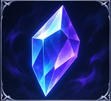
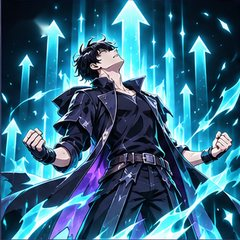

<!DOCTYPE html>
<html lang="zh-Hant">
<head>
<meta charset="utf-8">
<meta name="viewport" content="width=device-width, initial-scale=1, viewport-fit=cover">
<link rel="manifest" href="manifest.webmanifest">
<link rel="apple-touch-icon" href="icon-180.png">
<link rel="icon" href="icon-192.png">
<meta name="apple-mobile-web-app-capable" content="yes">
<meta name="mobile-web-app-capable" content="yes">
<meta name="apple-mobile-web-app-status-bar-style" content="black-translucent">
<meta name="apple-mobile-web-app-title" content="獵人系統">
<meta name="theme-color" content="#04060d">
<title>獵人系統：習慣升級</title>
<style>
:root{--bg:#04060d;--panel:rgba(9,18,44,.78);--line:#2a62e6;--glow:#4da3ff;--text:#d6e4ff;--dim:#7e93bf;--violet:#9a5cff;--red:#ff4466;--gold:#ffc857;--green:#3ee0a0;color-scheme:dark;box-sizing:border-box;padding-top:env(safe-area-inset-top,0px);padding-bottom:env(safe-area-inset-bottom,0px)}
html{scroll-padding-top:env(safe-area-inset-top,0px)}
*{box-sizing:border-box}
body{margin:0;background:radial-gradient(1200px 600px at 50% -10%,#0f2250 0,transparent 60%),var(--bg);color:var(--text);font-family:"Noto Sans TC","PingFang TC","Microsoft JhengHei",system-ui,sans-serif;min-height:100vh;line-height:1.5}
#app{max-width:560px;margin:0 auto;padding:14px 14px 96px}
h1,h2,h3{margin:0;font-weight:700}
.win{position:relative;background:var(--panel);border:1px solid var(--line);box-shadow:0 0 18px rgba(42,98,230,.35),inset 0 0 22px rgba(42,98,230,.12);padding:14px;margin-bottom:12px;backdrop-filter:blur(3px)}
.win::before,.win::after{content:"";position:absolute;width:12px;height:12px;border:2px solid var(--glow)}
.win::before{top:-2px;left:-2px;border-right:0;border-bottom:0}
.win::after{bottom:-2px;right:-2px;border-left:0;border-top:0}
.ttl{color:var(--glow);font-size:13px;letter-spacing:.12em;margin-bottom:10px;display:flex;justify-content:space-between;align-items:center}
.hero{display:flex;gap:14px;align-items:center}
.lv{font-size:64px;font-weight:800;line-height:1;color:#fff;text-shadow:0 0 14px var(--glow),0 0 32px var(--line)}
.lvl{font-size:12px;color:var(--dim)}
.rank{display:inline-block;border:1px solid var(--violet);color:var(--violet);padding:1px 8px;font-size:12px;margin-top:4px}
.nm{background:transparent;border:0;border-bottom:1px dashed var(--line);color:var(--text);font:inherit;font-size:18px;font-weight:700;width:100%;padding:2px 0}
.bar{height:9px;background:#0a1330;border:1px solid #1d3a86;position:relative;overflow:hidden}
.bar i{display:block;height:100%;background:linear-gradient(90deg,#1f4fe0,var(--glow));box-shadow:0 0 10px var(--glow);transition:width .5s}
.bar.hp i{background:linear-gradient(90deg,#c21f45,var(--red))}
.bar.gd i{background:linear-gradient(90deg,#7a4be0,var(--violet))}
.row{display:flex;justify-content:space-between;font-size:12px;color:var(--dim);margin:8px 0 3px}
.stats{display:grid;grid-template-columns:1fr 1fr;gap:8px 16px}
.st{font-size:13px}.st b{float:right;color:#fff}
.tabs{position:fixed;left:0;right:0;bottom:0;display:flex;background:rgba(4,8,20,.95);border-top:1px solid var(--line);padding-bottom:env(safe-area-inset-bottom,0px);z-index:5}
.tabs button{flex:1;background:none;border:0;color:var(--dim);font:inherit;font-size:12px;padding:13px 1px;cursor:pointer}
.tabs button.on{color:#fff;text-shadow:0 0 10px var(--glow);box-shadow:inset 0 2px 0 var(--glow)}
.q{border:1px solid #1d3a86;padding:10px 12px;margin-bottom:10px;background:rgba(5,12,32,.6)}
.q.bad{border-color:#6b2038}
.q.done{opacity:.6}
.qh{display:flex;justify-content:space-between;gap:8px;align-items:flex-start}
.qn{font-weight:700}
.tag{font-size:11px;color:var(--glow);border:1px solid #1d3a86;padding:0 6px;margin-left:6px;white-space:nowrap}
.bad .tag{color:var(--red);border-color:#6b2038}
.sub{font-size:12px;color:var(--dim);margin:6px 0 4px}
.btns{display:flex;gap:8px;margin-top:8px;flex-wrap:wrap}
button.b{background:rgba(42,98,230,.18);border:1px solid var(--glow);color:#fff;padding:7px 14px;font:inherit;font-size:13px;cursor:pointer}
button.b:hover{background:rgba(77,163,255,.35)}
button.b:disabled{opacity:.4;cursor:default}
button.b.r{border-color:var(--red);background:rgba(255,68,102,.14)}
button.b.g{border-color:var(--gold);background:rgba(255,200,87,.14);color:var(--gold)}
button.b.x{border-color:#334;color:var(--dim);background:none;margin-left:auto}
button:focus-visible,input:focus-visible,select:focus-visible{outline:2px solid var(--gold);outline-offset:2px}
.add{width:100%;padding:12px;margin-bottom:12px}
.empty{color:var(--dim);font-size:14px;text-align:center;padding:18px 6px}
.sh{display:flex;gap:12px;align-items:center;border:1px solid #3b2a73;background:linear-gradient(90deg,rgba(154,92,255,.16),transparent);padding:10px 12px;margin-bottom:10px}
.sh .em{width:42px;height:42px;display:grid;place-items:center;border:1px solid var(--violet);color:var(--violet);font-weight:800;box-shadow:0 0 14px rgba(154,92,255,.6);flex:none}
.ov{position:fixed;inset:0;z-index:20;background:rgba(2,4,12,.9);display:grid;place-items:center;padding:20px}
.ov .win{width:100%;max-width:420px;text-align:center;animation:pop .5s cubic-bezier(.2,1.4,.4,1)}
.big{font-size:44px;font-weight:800;color:#fff;text-shadow:0 0 12px var(--glow),0 0 40px var(--line);margin:6px 0}
.arise .big{text-shadow:0 0 12px var(--violet),0 0 40px #5a2bd0}
.arise.win{border-color:var(--violet);box-shadow:0 0 30px rgba(154,92,255,.5),inset 0 0 30px rgba(154,92,255,.2)}
.flash{position:fixed;inset:0;z-index:19;pointer-events:none;background:radial-gradient(circle,#9cd0ff,transparent 60%);animation:fl .9s forwards}
.glitch{animation:gl 2.2s steps(1) infinite}
@keyframes pop{from{transform:scale(.7);opacity:0}to{transform:none;opacity:1}}
@keyframes fl{from{opacity:.9}to{opacity:0}}
@keyframes gl{0%,92%,100%{transform:none}93%{transform:translate(-3px,1px);color:var(--glow)}95%{transform:translate(3px,-1px);color:var(--violet)}97%{transform:none}}
@media (prefers-reduced-motion:reduce){.ov .win,.flash,.glitch{animation:none}.bar i{transition:none}}
#toast{position:fixed;top:calc(10px + env(safe-area-inset-top,0px));left:50%;transform:translateX(-50%);z-index:30;display:flex;flex-direction:column;gap:6px;width:min(92vw,420px);pointer-events:none}
#toast div{background:rgba(6,14,38,.96);border:1px solid var(--glow);padding:8px 12px;font-size:13px;box-shadow:0 0 14px rgba(77,163,255,.5)}
#toast .bad{border-color:var(--red);box-shadow:0 0 14px rgba(255,68,102,.4)}
label{display:block;text-align:left;font-size:12px;color:var(--dim);margin:10px 0 4px}
input,select{width:100%;background:#050c20;border:1px solid var(--line);color:var(--text);padding:9px;font:inherit;font-size:16px}
.seg{display:flex;gap:8px}.seg button{flex:1}
.seg button.sel{background:rgba(77,163,255,.4)}
.cd{font-size:12px}.opt{display:block;width:100%;margin-bottom:8px;text-align:left;padding:11px 14px}.opt.sel{background:rgba(77,163,255,.45);box-shadow:0 0 10px var(--glow)}
html{background:#04060d}body{overscroll-behavior:none;-webkit-tap-highlight-color:transparent;touch-action:manipulation;-webkit-user-select:none;user-select:none}input,textarea{-webkit-user-select:text;user-select:text}textarea{width:100%;height:150px;background:#050c20;border:1px solid var(--line);color:var(--text);padding:9px;font:inherit;font-size:16px;resize:none}
.it{display:flex;justify-content:space-between;gap:8px;font-size:14px;padding:5px 0;text-align:left}.r0{color:#9aa7c7}.r1{color:#4da3ff}.r2{color:#b57cff}.r3{color:#ffc857}
:root[data-th=o]{--line:#ff6a00;--glow:#ff7a1a;--violet:#ffb347;--text:#f4ece4;--dim:#a8917d;--bg:#060504;--panel:rgba(22,14,8,.82)}
:root[data-th=o] body{background:radial-gradient(1200px 600px at 50% -10%,#3b1a06 0,transparent 60%),#060504}
:root[data-th=o] html,:root[data-th=o]{background:#060504}
:root[data-th=o] .bar i{background:linear-gradient(90deg,#d94f00,#ff8a2a);box-shadow:0 0 10px #ff7a1a}
:root[data-th=o] .bar.hp i{background:linear-gradient(90deg,#c21f45,#ff4466)}
:root[data-th=o] .bar.gd i{background:linear-gradient(90deg,#c98300,#ffc857)}
:root[data-th=o] button.b{background:rgba(255,106,0,.16)}
:root[data-th=o] button.b.r{background:rgba(255,68,102,.14)}
:root[data-th=o] button.b.g{background:rgba(255,200,87,.14)}
:root[data-th=o] .seg button.sel,:root[data-th=o] .opt.sel{background:rgba(255,106,0,.42)}
:root[data-th=o] .tabs{background:rgba(8,5,3,.96)}
.q{border-left:3px solid var(--glow)}.q.bad{border-left-color:var(--red)}.qn{font-size:16px}
.cfw{position:fixed;inset:0;z-index:25;pointer-events:none;overflow:hidden}.cfw i{position:absolute;top:-14px;width:8px;height:14px;animation:cf 2.4s ease-in forwards}@keyframes cf{to{transform:translate(var(--dx),105vh) rotate(var(--r));opacity:.9}}
.hlp summary{cursor:pointer;color:var(--glow);font-size:13px}
.bn{height:120px;border-radius:8px;background-size:cover;background-position:center;margin-bottom:12px;border:1px solid var(--line);position:relative;overflow:hidden}.bn::after{content:"";position:absolute;inset:0;background:linear-gradient(0deg,rgba(0,0,0,.65),transparent 55%)}.bn span{position:absolute;left:12px;bottom:8px;z-index:1;font-size:20px;font-weight:800;text-shadow:0 0 10px #000,0 0 6px var(--glow)}
.ic{width:44px;height:44px;border-radius:8px;object-fit:cover;flex:none;border:1px solid var(--line)}.bd{width:60px;height:52px;border-radius:10px;object-fit:contain;flex:none;background:#060b1e}.lk{filter:grayscale(1) brightness(.45)}
.dimg{height:84px;border-radius:6px;background-size:cover;background-position:center;margin-bottom:8px;border:1px solid var(--line)}.ovi{width:100%;max-height:200px;object-fit:cover;border-radius:8px;margin:8px 0;border:1px solid var(--line)}
.rf{position:relative;display:inline-block;width:46px;height:46px;flex:none}.rf img{position:absolute;inset:7%;width:86%;height:86%;border-radius:5px;object-fit:cover}.rf i{position:absolute;inset:-1px;background-size:100% 100%;background-repeat:no-repeat}.gi{width:18px;height:18px;vertical-align:-4px;border-radius:4px;margin-right:4px}.si{width:24px;height:24px;border-radius:5px;vertical-align:middle;margin-right:6px}
.ii{width:32px;height:32px;object-fit:contain;vertical-align:middle;flex:none}
#title{position:fixed;inset:0;z-index:60;background:#000}#title img{width:100%;height:100%;object-fit:cover}#title::after{content:"";position:absolute;inset:auto 0 0 0;height:45%;background:linear-gradient(0deg,rgba(0,0,0,.85),transparent);pointer-events:none}
#title .tl{position:absolute;left:0;right:0;bottom:calc(9% + env(safe-area-inset-bottom,0px));text-align:center;z-index:2}
#title button{background:none;border:0;color:#fff;font:inherit;font-size:30px;font-weight:800;letter-spacing:.14em;padding:18px 26px;text-shadow:0 0 14px var(--glow),0 0 30px #000;animation:pl 2.6s ease-in-out infinite;cursor:pointer}@keyframes pl{50%{opacity:.45}}
button.b{min-height:40px;font-size:14.5px}.big1{flex:1;min-height:46px;font-size:16px}.sub{font-size:13.5px}.row{font-size:13px}
.brc{height:150px;display:grid;place-items:center}.brd{width:130px;height:130px;border-radius:50%;background:radial-gradient(circle,rgba(154,92,255,.6),rgba(77,163,255,.25));box-shadow:0 0 30px var(--glow);transition:transform 1s linear;transform:scale(.6)}
.evw{opacity:0;animation:evshow .2s 2.2s forwards;transition:opacity .25s}@keyframes evshow{to{opacity:1}}.pimg{position:relative;min-height:320px;background:#050a1c}.pimg img{display:block;width:100%;max-height:68vh;object-fit:cover}.pcap{position:absolute;left:0;right:0;bottom:0;padding:44px 16px 14px;background:linear-gradient(0deg,rgba(0,0,0,.88),transparent);color:#fff;font-size:16px;line-height:1.85;white-space:pre-line;text-shadow:0 0 6px #000;text-align:left}
</style>
</head>
<body>
<div id="toast"></div>
<div id="app"></div>
<div id="ov"></div>
<nav class="tabs" id="tabs"></nav>
<script>
var KEY='hunter-system-v1';
var STATS={STR:'體能',INT:'智力',VIT:'健康',SEN:'心靈',AGI:'效率'};
var S=null,tab='status',ovq=[],confirmId=null;
function z(n){return String(n).padStart(2,'0')}
function ds(d){d=d||new Date();return d.getFullYear()+'-'+z(d.getMonth()+1)+'-'+z(d.getDate())}
var T=ds(),Y=ds(new Date(Date.now()-864e5));
function esc(s){return String(s).replace(/[&<>"]/g,function(c){return{'&':'&amp;','<':'&lt;','>':'&gt;','"':'&quot;'}[c]})}
function need(l){return 100+(l-1)*50}
function rankOf(l){return l>=30?'S':l>=20?'A':l>=15?'B':l>=10?'C':l>=5?'D':'E'}
function fresh(){return{name:'玩家',lv:1,xp:0,hp:100,day:T,stats:{STR:0,INT:0,VIT:0,SEN:0,AGI:0},habits:[],rewards:[]}}
function load(){try{var r=localStorage.getItem(KEY);S=r?JSON.parse(r):fresh()}catch(e){S=fresh()}
 if(!S||!S.habits)S=fresh();
 if(S.init===undefined)S.init=S.habits.length>0;
 applyTheme();rollover();if(!S.init&&!S.habits.length)ovq.push({k:'quiz'})}
function save(){checkAch();try{localStorage.setItem(KEY,JSON.stringify(S));lastSave={ok:1,t:Date.now()}}catch(e){lastSave={ok:0,t:Date.now()};saveFail()}}
function daysDiff(a,b){return Math.round((new Date(b+'T00:00:00')-new Date(a+'T00:00:00'))/864e5)}
function rollover(){var L=[],hp=0,xp=0;if(S.pro===undefined&&S.init)S.pro=1;S.gems=S.gems||0;S.pity=S.pity||0;S.rewards=S.rewards||[];S.rewards.forEach(function(r){if(r.price===undefined){r.price=Math.max(10,(r.lv||1)*10);r.cnt=r.claimed?1:0}});S.dungeons=S.dungeons||[];S.habits.forEach(function(h){delete h.link});S.dungeons.forEach(function(d){if(d.goal)delete d.goal.m});
 S.habits.forEach(function(h){if(fqT(h)==='n')weekEval(h);else if(h.last&&h.last<Y&&brokeFrom(h,h.last)){if(S.sage&&S.sage.lv>1&&h.streak>=3&&(!S.shieldAt||daysDiff(S.shieldAt,T)>=7)){S.shieldAt=T;h.last=Y;toast('[系統] 詠唱破棄：已保護「'+h.name+'」的連續天數')}else h.streak=0}
  if(S.hard&&h.type==='good'){var b=h.last||h.start||S.day;if(h.pen&&h.pen>b)b=h.pen;
   var m=Math.min(3,missCnt(h,b));if(m>0){hp+=10*m;xp+=Math.ceil(h.xp/2)*m;L.push(h.name+'：漏做 '+m+' 天')}}
  h.pen=Y});
 if(S.day!==T){S.hp=Math.min(100,S.hp+10+eff().rg+(sk('s2')?5:0));poison()}
 dExpire();sageWarn();if(S.urg&&S.urg.d!==T&&S.urg.i>=0&&S.urg.st==='on'&&!S.urg.done&&S.hard){hp+=5;L.push('緊急任務未完成：'+URG[S.urg.i])}if(!S.urg||S.urg.d!==T)S.urg={d:T,i:Math.random()<.5?Math.floor(Math.random()*URG.length):-1,done:false,st:'new'};shadowPay();S.day=T;
 if(hp){S.hp-=hp;S.xp=Math.max(0,S.xp-xp);var nd=nearDeath();if(nd===1)L.push('不屈意志發動：免於瀕死，HP 回復至 30');else if(nd===2)L.push('瀕死：本級經驗歸零，HP 回復至 50');ovq.push({k:'pen',L:L,hp:hp,xp:xp})}
 save()}
function tick(){if(ds()!==T){T=ds();Y=ds(new Date(Date.now()-864e5));rollover();render();flush();return}updateCd();updateTm()}
function nOpen(){return S.habits.filter(function(h){return !done(h)&&h.type==='good'&&dueToday(h)}).length}
function updateCd(){var n=new Date(),e=new Date(n.getFullYear(),n.getMonth(),n.getDate()+1),s=Math.floor((e-n)/1000),t=z(Math.floor(s/3600))+':'+z(Math.floor(s%3600/60))+':'+z(s%60),op=nOpen();
 document.querySelectorAll('.cd').forEach(function(x){x.textContent='距離截止 '+t;x.style.color=(s<10800&&op)?'var(--red)':'var(--glow)'})}
function cdBox(){return'<div class="win"><div class="ttl"><span>[ 今日截止 ]</span><span class="cd"></span></div><div class="sub" style="margin:0">尚有 '+nOpen()+' 項好習慣未完成。'+(S.hard?'困難模式：漏做會自動扣 HP 與 XP。':'午夜過後未完成，連續天數會中斷。')+'</div></div>'}
function modeBox(){return'<div class="win"><div class="ttl"><span>[ 難度模式 ]</span></div><div class="sub" style="margin:0 0 8px">'+(S.hard?'困難模式：好習慣每漏做一天，自動扣 10 HP 與該任務一半 XP（一次最多結算 3 天）。':'一般模式：漏做只會中斷連續天數。')+'</div><div class="btns"><button class="b '+(S.hard?'r':'')+'" onclick="toggleHard()">切換為'+(S.hard?'一般':'困難')+'模式</button><button class="b" onclick="startQuiz()">重新做覺醒測驗</button><button class="b" onclick="showPro(0)">重看序章</button></div><div class="btns"><button class="b" onclick="exportData()">匯出備份</button><button class="b" onclick="importData()">匯入備份</button><button class="b" onclick="toggleTheme()">切換主題（橘黑／藍紫）</button><button class="b r" onclick="askReset()">重做角色</button></div></div>'}
function toggleHard(){S.hard=!S.hard;S.habits.forEach(function(h){h.pen=Y});save();render();toast('[系統] 已切換為'+(S.hard?'困難':'一般')+'模式',S.hard)}
var GL=[['改掉拖延','AGI','good','25 分鐘專注衝刺','擊敗拖延魔',14,[['c',10]]],['維持健身','STR','good','運動 {m} 分鐘','鋼鐵體魄之門',21,[['c',12]]],['多喝水','VIT','good','喝水 2000cc','生命之泉',7,[['s',7]]],['不熬夜','VIT','good','{sl} 前就寢','不眠者之夜',14,[['c',12]]],['不吃甜食','VIT','bad','不吃甜食與含糖飲料','斷糖之戰',14,[['s',7],['c',12]]],['禁慾（自我克制）','SEN','bad','自我克制','禁慾者之路',21,[['s',14]]],['不滑手機','SEN','bad','不滑短影音與手機','斷網者的試煉',14,[['s',5],['c',12]]],['閱讀','INT','good','閱讀 {m} 分鐘','禁書庫',21,[['c',15]]]];
var QS=[{q:'你的作息比較接近？',o:['早起型（早睡早起）','夜貓型（晚睡晚起）']},{q:'你最想達成哪些目標？（最多選 3 項）',m:1,o:GL.map(function(g){return g[0]})},{q:'每天能投入的程度？（決定任務難度與 XP）',o:['輕鬆（簡單 15 XP）','普通（中等 30 XP）','認真（困難 50 XP）']},{q:'選擇難度模式',o:['一般模式（漏做只中斷連續）','困難模式（漏做自動受罰）']}];
var QZ=null;
function startQuiz(){QZ={i:0,a:[],sel:[]};qz()}
function qz(){var q=QS[QZ.i];$('#ov').innerHTML='<div class="ov"><div class="win" style="max-height:92vh;overflow:auto"><div class="ttl"><span>[ 覺醒測驗 '+(QZ.i+1)+'／'+QS.length+' ]</span></div><div style="font-weight:700;margin-bottom:10px;text-align:left">'+q.q+'</div>'+q.o.map(function(t,k){return'<button class="b opt'+(QZ.sel.indexOf(k)>-1?' sel':'')+'" onclick="pick('+k+')">'+t+'</button>'}).join('')+(q.m?'<div class="btns" style="justify-content:center"><button class="b g" onclick="nextQ()">下一題</button></div>':'')+'<div class="btns" style="justify-content:center"><button class="b x" style="margin-left:0" onclick="skipQ()">略過測驗</button></div></div></div>'}
function pick(k){var q=QS[QZ.i];if(q.m){var p=QZ.sel.indexOf(k);if(p>-1)QZ.sel.splice(p,1);else if(QZ.sel.length<3)QZ.sel.push(k);qz()}else{QZ.a.push([k]);QZ.i++;QZ.sel=[];if(QZ.i<QS.length)qz();else finishQ()}}
function nextQ(){if(!QZ.sel.length){toast('請至少選 1 項',true);return}QZ.a.push(QZ.sel.slice());QZ.i++;QZ.sel=[];if(QZ.i<QS.length)qz();else finishQ()}
function skipQ(){S.init=true;save();closeOv()}
function exportData(){var j=JSON.stringify(S,function(k,v){return k==='undo'?undefined:v});$('#ov').innerHTML='<div class="ov"><div class="win"><div class="ttl">[ 匯出備份 ]</div><div class="sub" style="margin:0 0 8px;text-align:left">這只是「已產生備份」；按「複製」「分享」或「下載檔案」並確實保存後，才會記為已備份。複製這段文字貼到備忘錄，或下載成檔案。換裝置或重裝時用「匯入備份」還原。</div><textarea id="bk" readonly>'+esc(j)+'</textarea><div class="btns" style="justify-content:center"><button class="b" onclick="copyBk()">複製</button><button class="b" onclick="dlBk()">下載檔案</button><button class="b" id="shb" onclick="shareBk()">分享</button><button class="b x" style="margin-left:0" onclick="closeOv()">關閉</button></div></div></div>';if(!navigator.share)$('#shb').style.display='none'}
function copyBk(){var t=$('#bk');t.focus();t.select();t.setSelectionRange(0,t.value.length);var ok=false;try{ok=document.execCommand('copy')}catch(e){}
 if(navigator.clipboard&&!ok){navigator.clipboard.writeText(t.value).then(function(){toast('[系統] 已複製備份，請確認已貼到備忘錄');S.bk=Date.now();save()},function(){toast('請長按文字手動複製',true)});return}
 if(ok){S.bk=Date.now();save()}toast(ok?'[系統] 已複製備份，請確認已貼到備忘錄':'請長按文字手動複製',!ok)}
function shareBk(){try{navigator.share({title:'獵人系統備份',text:$('#bk').value}).then(function(){S.bk=Date.now();save()},function(){})}catch(e){}}
function importData(){$('#ov').innerHTML='<div class="ov"><div class="win"><div class="ttl">[ 匯入備份 ]</div><div class="sub" style="margin:0 0 8px;text-align:left">貼上先前匯出的備份文字。匯入會覆蓋目前的所有進度。</div><input type="file" accept=".json,.txt" onchange="impFile(this)" style="margin-bottom:8px"><textarea id="bk" placeholder="貼上備份文字，或選擇備份檔"></textarea><div class="btns" style="justify-content:center"><button class="b r" onclick="doImport()">匯入並覆蓋</button><button class="b x" style="margin-left:0" onclick="closeOv()">取消</button></div></div></div>'}
function doImport(){var o;try{o=JSON.parse($('#bk').value.trim())}catch(e){toast('格式不正確，請完整貼上備份文字',true);return}
 if(!o||!Array.isArray(o.habits)||!o.stats||typeof o.lv!=='number'){toast('這不是有效的備份',true);return}
 S=o;S.init=true;rollover();save();closeOv();toast('[系統] 備份已還原')}
var RK=['E','D','C','B','A','S'],RN=['普通','稀有','史詩','傳說'],RP=[1,2,4,8],LP=[.02,.04,.07,.12],KD=['武器','防具','飾品'];
var EQN=[['鐵匕首','獵人長劍','影之短刃','君王雙刃'],['皮甲','鎖子甲','暗影披風','君王鎧甲'],['銅戒','魔力吊墜','影子戒指','君王之冠']];
var SK={s1:['魂晶感應','完成任務時額外 +1 魂晶',1],s2:['再生','每日 HP 回復 +5',1],s3:['鐵壁','破戒時 HP 損失 −5',1],s4:['君王威壓','XP 加成 +5%',2],s5:['壓制','副本傷害 +20%',2],s6:['暗影支配','暗影收編機率 +20%',3]};
var MON=[['哥布林兵','巨鼠','盜賊'],['狼人','獸人戰士','叛逃獵人'],['石像鬼','暗夜刺客','巨魔'],['冰熊','騎士團長','蜥蜴戰神'],['龍騎士','巨人王','暗影法師','鷹翼影弓'],['古龍','冰之君主','將軍級獵人']];
var W=[[70,25,5,0],[60,30,9,1],[45,38,15,2],[30,42,22,6],[20,40,30,10],[10,35,38,17]];
function sk(i){return S.skills&&S.skills.indexOf(i)>-1}
function rnd(a){return a[Math.floor(Math.random()*a.length)]}
function pickR(w){var t=w.reduce(function(a,b){return a+b},0),x=Math.random()*t;for(var i=0;i<w.length;i++){x-=w[i];if(x<0)return i}return 0}
function bestG(k){var b=-1;(S.gear||[]).forEach(function(g){if(g.k===k&&g.r>b)b=g.r});return b}
function gearPct(){var p=0;for(var k=0;k<3;k++){var b=bestG(k);if(b>=0)p+=RP[b]/100}return p}

function mult(){return Math.min(3,1+0.1*shadows().length+gearPct()+legPct()+(sk('s4')?.05:0)+eff().xp+(domOn()?.3+.03*actN():0)+Math.min(.15,((S.pred&&S.pred.mim)||[]).length*.01))}
function loot(r){var t=pickR([55,15,30]),rf=[1,3,8,20][r];
 if(t===0){var k=Math.floor(Math.random()*3);S.gear=S.gear||[];
  if(S.gear.some(function(g){return g.k===k&&g.r===r})){S.gems+=rf;return{r:r,ic:IC(k,r),txt:KD[k]+'・'+EQN[k][r]+'（重複，換回 '+rf+' 魂晶）'}}
  S.gear.push({k:k,r:r});return{r:r,ic:IC(k,r),txt:KD[k]+'・'+EQN[k][r]+'　XP +'+RP[r]+'%'}}
 if(t===1){var sr=Math.max(1,Math.min(3,r)),id=rnd(Object.keys(SK).filter(function(i){return SK[i][2]===sr}));S.skills=S.skills||[];
  if(sk(id)){S.gems+=rf;return{r:sr,ic:KF(SKN[id]),fr:1,txt:'技能・'+SK[id][0]+'（重複，換回 '+rf+' 魂晶）'}}
  S.skills.push(id);return{r:sr,ic:KF(SKN[id]),fr:1,txt:'技能・'+SK[id][0]+'：'+SK[id][1]}}
 var n=rnd(MON[[0,2,4,5][r]]);S.legion=S.legion||[];S.legion.push({n:n,r:r});return{r:r,ic:monImg(n,r),fr:1,txt:'暗影士兵・'+n+'　XP +'+Math.round(LP[r]*100)+'%'}}
function itemsHtml(a){return a.map(function(x){return'<div class="it r'+x.r+'"><span style="display:flex;align-items:center;gap:8px">'+(x.ic?(x.fr?rf(x.ic,x.r):''):'')+RN[x.r]+'　'+esc(x.txt)+'</span></div>'}).join('')}
function pull(n){var c=n===10?90:10;if(S.gems<c){toast('魂晶不足',true);return}S.gems-=c;S.pulls=(S.pulls||0)+n;var res=[],low=true;
 for(var i=0;i<n;i++){S.pity++;var r=S.pity>=30?3:pickR([60,28,9,3]);if(r===3)S.pity=0;if(n===10&&i===9&&low&&r===0)r=1;if(r>0)low=false;res.push(loot(r))}
 save();$('#ov').innerHTML='<div class="ov"><div class="win" style="max-height:92vh;overflow:auto"><div class="ttl" style="justify-content:center">[ 抽取結果 ]</div>'+(res.some(function(x){return x.r===3})?evtHead('legend'):'')+itemsHtml(res)+'<div class="btns" style="justify-content:center"><button class="b" onclick="closeOv()">確認</button></div></div></div>'}
function addDays(s,n){var d=new Date(s+'T00:00:00');d.setDate(d.getDate()+n);return ds(d)}
function baseXp(){return S.habits.reduce(function(a,h){return a+h.xp},0)}
function mkD(o){o.id='d'+Date.now()+Math.floor(Math.random()*99);o.start=T;if(o.days){o.end=addDays(T,o.days-1+(eq('ice')?1:0));if(o.k)o.max=o.hp=Math.round(o.days*baseXp()*o.k)}S.dungeons.push(o);save()}
function openBoss(){$('#ov').innerHTML='<div class="ov"><div class="win"><div class="ttl">[ 設定首領 ]</div><label>真實目標（首領名稱）</label><input id="bn" maxlength="20" placeholder="例如：體重降到 65 公斤"><label>單位</label><input id="bu" maxlength="6" placeholder="kg、公里、本"><label>起始值</label><input id="bf" type="number" step="any"><label>目標值</label><input id="bt" type="number" step="any"><label>強度</label><select id="bk"><option value="0">標準（C 級）</option><option value="1">精英（B 級）</option><option value="2">地獄（A 級）</option></select><div class="btns" style="justify-content:center;margin-top:14px"><button class="b r" onclick="addBoss()">挑戰</button><button class="b x" style="margin-left:0" onclick="closeOv()">取消</button></div></div></div>'}
function addBoss(){var f=parseFloat($('#bf').value),t=parseFloat($('#bt').value),n=$('#bn').value.trim(),r=2+ +$('#bk').value;if(!n||isNaN(f)||isNaN(t)||f===t){toast('請填寫目標、起始值與目標值',true);return}mkD({type:'boss',name:n,rank:r,goal:{u:$('#bu').value.trim(),f:f,t:t,c:f},mon:rnd(MON[r])});closeOv()}
function prog(d){var g=d.goal;return Math.max(0,Math.min(1,(g.c-g.f)/(g.t-g.f)))}
function openVal(id){$('#ov').innerHTML='<div class="ov"><div class="win"><div class="ttl">[ 更新目前數值 ]</div><input id="bv" type="number" step="any" placeholder="目前數值"><div class="btns" style="justify-content:center;margin-top:14px"><button class="b" onclick="setVal(\''+id+'\')">更新</button><button class="b x" style="margin-left:0" onclick="closeOv()">取消</button></div></div></div>'}
function setVal(id){var d=S.dungeons.find(function(x){return x.id===id}),v=parseFloat($('#bv').value);if(!d||isNaN(v))return;d.goal.c=v;save();if(prog(d)>=1)clearD(d);closeOv()}
function delD(id){if(confirmId!==id){confirmId=id;render();return}S.dungeons=S.dungeons.filter(function(x){return x.id!==id});confirmId=null;save();render()}
function hit(x){var c=[],dm=dmgM();S.dungeons.forEach(function(d){if(d.type==='boss'||d.objs)return;d.hp=Math.max(0,d.hp-x*(sk('s5')?1.2:1)*(S.pred&&S.pred.lv>1?1.25:1)*dm*spec(d.type));if(d.hp<=0)c.push(d)});c.forEach(clearD)}
function clearD(d){S.clr=(S.clr||0)+1;if(S.clr===1&&S.lv<3)toast('[系統] 已解鎖「暗影」與「寶庫」分頁');S.dungeons=S.dungeons.filter(function(x){return x.id!==d.id});var r=d.rank,gm=Math.round([10,20,40,80,150,300][r]*(d.type==='boss'?1.5:1)*(eq('lord')?1.3:1)*(d.type==='boss'?specB():1)),xp=gain([30,60,120,200,350,600][r]);S.gems+=gm;
 var n=1+(r>=2?1:0)+(r>=4?1:0)+(d.type==='boss'?1:0),it=[];for(var i=0;i<n;i++)it.push(loot(pickR(W[r])));
 var mn=d.mon||rnd(MON[r]),ch=Math.min(1,(d.type==='boss'?1:d.type==='tower'?.6:.7)+(sk('s6')?.2:0)+eff().ext),ex;
 if(Math.random()<ch){var mr=[0,0,1,1,2,3][r];S.legion=S.legion||[];S.legion.push({n:mn,r:mr});ex='<div class="big glitch" style="font-size:30px;margin-top:10px">ARISE</div><div class="it r'+mr+'">暗影收編：'+esc(mn)+'（'+RN[mr]+'）</div>'}
 else ex='<div class="sub">暗影收編失敗：'+esc(mn)+' 的身影消散了</div>';
 if(d.type==='tower'){S.best=Math.max(S.best||0,d.floor);enterTower(d.floor+1)}
 var pt=eat(mn,r,d)+dropNamed(d);evoCheck();save();ovq.push({k:'clear',h:'<div class="ov"><div class="win" style="max-height:92vh;overflow:auto"><div class="ttl" style="justify-content:center">[ 副本攻略完成 ]</div>'+evtHead(d.type==='boss'?'boss':d.type==='tower'?'tower':'clear')+'<div class="big" style="font-size:32px">DUNGEON CLEAR</div><div style="font-size:14px">'+esc(d.name)+'　'+RK[r]+' 級</div><div class="sub">魂晶 +'+gm+'　XP +'+xp+'</div>'+itemsHtml(it)+ex+pt+'<div class="btns" style="justify-content:center"><button class="b" onclick="closeOv()">確認</button></div></div></div>'})}
function dExpire(){S.dungeons.slice().forEach(function(d){if(d.type==='boss'||d.end>=T)return;S.dungeons=S.dungeons.filter(function(x){return x.id!==d.id});
 if(d.type==='tower'){var f=Math.max(1,d.floor-1);enterTower(f);evt('fail',{},'<div class="sub" style="text-align:center">試煉之塔：退回第 '+f+' 層</div>')}else evt('fail',{},'<div class="sub" style="text-align:center">「'+d.name+'」：攻略失敗</div>')})}
function dcard(d){if(d.objs)return ocard(d);var b=d.type==='boss',p=b?prog(d)*100:(1-d.hp/d.max)*100;
 return'<div class="q"><div class="dimg" style="background-image:url('+dImg(d)+')"></div><div class="qh"><div><span class="qn">'+DI[d.type]+' '+esc(d.name)+'</span><span class="tag">'+RK[d.rank]+' 級</span></div>'+(b?'':'<div class="sub" style="margin:0">剩 '+Math.max(0,daysDiff(T,d.end)+1)+' 天</div>')+'</div>'
 +(b?'<div class="sub">首領：'+esc(d.mon)+'　起始 '+d.goal.f+' → 目標 '+d.goal.t+esc(d.goal.u)+'　目前 '+d.goal.c+'</div>':'<div class="sub">首領血量 '+Math.ceil(d.hp)+' ／ '+d.max+'</div>')
 +'<div class="bar hp"><i style="width:'+(100-p)+'%"></i></div><div class="btns">'+(b?'<button class="b" '+(d.goal.m?'disabled':'')+' onclick="openVal(\''+d.id+'\')">'+(d.goal.m?'由健康資料更新':'更新目前數值')+'</button>':'<button class="b" onclick="askSkill(\'touch\',\''+d.id+'\')">支配者之觸'+(S.touch===T?'（已用）':'')+'</button>')+'<button class="b x" onclick="delD(\''+d.id+'\')">'+(confirmId===d.id?'確定放棄？':'放棄')+'</button></div></div>'}
function dunView(){return recView()+dunView0()}
function dunView0(){var f=function(t){return S.dungeons.filter(function(d){return d.type===t})},g=f('gate'),t=f('tower'),b=f('boss');
 return''
 +'<div class="win"><div class="ttl">[ 傳送門 ]</div>'+(g.map(dcard).join('')||'<div class="empty">尚無傳送門</div>')+'<button class="b add" style="margin:0" onclick="openGate()">＋ 開啟傳送門</button></div>'
 +'<div class="win"><div class="ttl"><span>[ 試煉之塔 ]</span><span>最高 '+(S.best||0)+' 層</span></div>'+(t.map(dcard).join('')||'<button class="b add" style="margin:0" onclick="enterTower(1)">進入試煉之塔</button>')+'</div>'
 +'<div class="win" style="border-color:#7a2442"><div class="ttl" style="color:var(--red)">[ 首領討伐 ]</div>'+(b.map(dcard).join('')||'<div class="empty">用真實目標當首領，例如體重、跑步距離</div>')+'<button class="b add r" style="margin:0" onclick="openBoss()">＋ 設定首領</button></div>'}
function vaultView(){return'<div class="win"><div class="ttl"><span>[ 寶庫 ]</span><span style="color:var(--gold)">魂晶 '+S.gems+'</span></div><div class="sub" style="margin:0 0 8px">每完成一個任務得 1 魂晶；通關副本、收編習慣暗影可得更多。機率：普通 60%、稀有 28%、史詩 9%、傳說 3%。再抽 '+(30-S.pity)+' 次內必出傳說（保底）。十連至少一個稀有。</div><div class="btns"><button class="b g" onclick="pull(1)">單抽 10</button><button class="b g" onclick="pull(10)">十連 90</button></div></div>'
 +'<div class="win"><div class="ttl"><span>[ 裝備 ]</span><span>XP +'+Math.round(gearPct()*100)+'%</span></div>'+KD.map(function(n,k){var b=bestG(k);return'<div class="it"><span style="display:flex;align-items:center;gap:8px">'+(b<0?'':'')+' '+n+'</span>'+(b<0?'<span style="color:var(--dim)">未取得</span>':'<span class="r'+b+'">'+RN[b]+'・'+EQN[k][b]+'</span>')+'</div>'}).join('')+'</div>'
 +'<div class="win"><div class="ttl">[ 技能 ]</div>'+skillList()+'</div>'+sysBox()}
function legionView(){var L=S.legion||[];return'<div class="win arise" style="border-color:var(--violet)"><div class="ttl" style="color:var(--violet)"><span>[ 暗影士兵（戰利品） ]</span><span>XP +'+Math.round(legPct()*100)+'%</span></div>'+(L.map(function(m){return'<div class="it r'+m.r+'"><span>'+esc(m.n)+'</span><span>'+RN[m.r]+'・+'+Math.round(LP[m.r]*100)+'%</span></div>'}).join('')||'<div class="empty">通關副本或抽取，有機會收編暗影士兵。</div>')+'</div>'}
function maxStreak(){return S.habits.reduce(function(a,h){return Math.max(a,h.streak)},0)}
function dStat(d){if(d.objs)return dStat2(d);var left=daysDiff(T,d.end)+1,el=daysDiff(d.start,T)+1,avg=(d.max-d.hp)/el;return{left:left,avg:avg,need:d.hp/Math.max(1,left),ok:avg*left>=d.hp}}
function sageWarn(){if(!(S.sage&&S.sage.lv>1))return;S.dungeons.forEach(function(d){if(d.type==='boss')return;var t=dStat(d);if(t.left<=3&&!t.ok)toast('[預測演算] 「'+d.name+'」剩 '+t.left+' 天，'+(d.objs?'有目標可能無法達成':'每天需約 '+Math.ceil(t.need)+' XP 才能通關'),true)})}
function eat(n,r,d){var P=S.pred=S.pred||{n:0,mem:{},mim:[],lv:1},t='<div class="it" style="color:var(--green)"><span>捕食：'+esc(n)+'</span><span>';
 P.n++;P.mem[n]=(P.mem[n]||0)+1;S.maxRank=Math.max(S.maxRank||0,r);if(d.type==='boss')S.bosses=(S.bosses||0)+1;
 if(P.mem[n]===3&&P.mim.indexOf(n)<0){P.mim.push(n);t+='習得擬態 XP +1%'}else t+='解析 '+Math.min(3,P.mem[n])+'／3';
 t+='</span></div>';
 if(P.lv>1&&Math.random()<.3){var un=Object.keys(SK).filter(function(i){return !sk(i)});if(un.length){var id=rnd(un);S.skills=S.skills||[];S.skills.push(id);t+='<div class="it r3"><span>掠奪：習得技能「'+SK[id][0]+'」</span></div>'}}
 return t}
function evoOv(a,b,t){ovq.push({k:'clear',h:'<div class="ov"><div class="win arise"><div class="ttl" style="justify-content:center;color:var(--violet)">[ 技能進化 ]</div>'+evtHead(a==='捕食者'?'evo1':'evo2',null,null,1)+'<div class="sub">'+a+' 進化為</div><div class="big glitch" style="font-size:26px">'+b+'</div><div style="text-align:left;font-size:14px">'+t.split('\n').map(function(x){return'<div>'+esc(x)+'</div>'}).join('')+'</div><div class="btns" style="justify-content:center"><button class="b g" onclick="closeOv()">確認</button></div></div></div>'})}
function evoCheck(){var P=S.pred=S.pred||{n:0,mem:{},mim:[],lv:1},G=S.sage=S.sage||{d:0,lv:1};
 if(P.lv<2&&P.n>=30&&(S.maxRank||0)>=4&&maxStreak()>=20){P.lv=2;evoOv('捕食者','暴食之王 別西卜','腐蝕：副本傷害 +25%\n掠奪：捕食時 30% 機率習得技能\n供給：暗影士兵加成 ×1.5')}
 if(G.lv<2&&G.d>=30&&(S.bosses||0)>=1&&maxStreak()>=30){G.lv=2;evoOv('大賢者','智慧之王 拉斐爾','詠唱破棄：每週一次保護即將中斷的連續天數\n預測演算：副本落後時提前警告')}}
function sageBox(){var P=S.pred||{n:0,mem:{},mim:[],lv:1},G=S.sage||{d:0,lv:1},rows=[],ck=function(b){return b?'✓':'✗'},
 risk=S.habits.filter(function(h){return !done(h)&&h.streak>=3}).sort(function(a,b){return b.streak-a.streak})[0];
 rows.push(risk?'最需保護：「'+esc(risk.name)+'」連續 '+risk.streak+' 天，今天還沒完成':'目前沒有連續天數受到威脅');
 S.dungeons.forEach(function(d){if(d.type==='boss')return;var t=dStat(d);if(d.objs){rows.push(esc(d.name)+'：'+(t.ok?'仍有機會達成全部目標':'<span style="color:var(--red)">有目標已不可能達成</span>'));return}rows.push(esc(d.name)+'：'+(t.ok?'照目前速度可通關':'<span style="color:var(--red)">落後，每天需約 '+Math.ceil(t.need)+' XP（目前平均 '+Math.round(t.avg)+'）</span>'))});
 return'<div class="win"><div class="ttl">[ 專屬技能 ]</div>'
 +'<div class="it"><span style="display:flex;align-items:center;gap:8px">1?8:7)+'" alt=""><b>'+(P.lv>1?'暴食之王 別西卜':'捕食者')+'</b></span><span style="color:var(--dim);font-size:12px">捕食 '+P.n+' 隻・擬態 '+P.mim.length+'</span></div>'
 +'<div class="sub" style="margin:0 0 6px">通關必定捕食魔物；同種解析 3 次習得擬態（XP +1%）。'+(P.lv>1?'已進化。':'進化條件：捕食 30 隻（'+P.n+'）、通關 A 級以上（'+ck((S.maxRank||0)>=4)+'）、任一習慣連續 20 天（'+Math.min(20,maxStreak())+'）')+'</div>'
 +'<div class="it"><span style="display:flex;align-items:center;gap:8px">1?10:9)+'" alt=""><b>'+(G.lv>1?'智慧之王 拉斐爾':'大賢者')+'</b></span><span style="color:var(--dim);font-size:12px">解析 '+G.d+' 天</span></div>'
 +'<div class="sub" style="margin:0 0 6px">每天第一個完成的任務 XP ×2。'+(G.lv>1?'已進化。':'進化條件：解析 30 天（'+G.d+'）、完成首領討伐（'+ck((S.bosses||0)>=1)+'）、任一習慣連續 30 天（'+Math.min(30,maxStreak())+'）')+'</div>'
 +'<div class="ttl" style="margin-top:10px">[ 今日解析 ]</div>'+rows.map(function(x){return'<div style="font-size:13px;margin-bottom:4px">'+x+'</div>'}).join('')+'</div>'}
var NM={fang:['卡薩卡的毒牙','B','毒：每天有 50% 機率讓副本的一項「完成次數」目標自動 +1（不會直接通關）。來源：B 級以上首領'],ice:['巴魯卡的阮首','A','冰凍：新開的副本期限 +1 天。來源：A 級以上副本'],demon:['惡魔王短劍','S','雙持時「合二為一」：傷害隨體能額外提升，25% 機率兩倍傷害。來源：試煉之塔第 10 層'],lord:['君主短劍','S','副本傷害 ×1.3，通關魂晶 +30%。來源：S 級傳送門']};
function eff(){var s=S.stats;return{dmg:Math.min(.5,s.STR*.005),gem:Math.min(.5,s.AGI*.01),dr:Math.min(8,Math.floor(s.VIT/5)),rg:Math.min(10,Math.floor(s.VIT/10)),xp:Math.min(.3,s.INT*.003),ext:Math.min(.25,s.SEN*.005)}}
function effTxt(){var e=eff();return'體能：副本額外進度加成 +'+Math.round(e.dmg*100)+'%　效率：任務額外魂晶機率 '+Math.round(e.gem*100)+'%　健康：破戒少扣 '+e.dr+' HP、每日回血 +'+e.rg+'　智力：XP +'+Math.round(e.xp*100)+'%　心靈：暗影收編機率 +'+Math.round(e.ext*100)+'%'}
function alloc(k){if(!S.pts)return;S.pts--;S.stats[k]++;save();render()}
function eq(id){return(S.slots||[]).indexOf(id)>-1}
function togEq(id){S.slots=S.slots||[];var i=S.slots.indexOf(id);if(i>-1)S.slots.splice(i,1);else if(S.slots.length>=2){toast('雙持上限 2 把，請先卸下一把',true);return}else S.slots.push(id);save();render()}
function dmgM(){var m=1+eff().dmg;if(domOn())m*=1.3;if(eq('lord'))m*=1.3;if(eq('demon')&&S.slots.length>=2){m*=1+Math.min(.5,S.stats.STR*.005);if(Math.random()<.25)m*=2}return m}
function dropNamed(d){var c=[],o=[];S.named=S.named||[];if(d.type==='boss'&&d.rank>=3)c.push('fang');if(d.rank>=4&&d.type!=='tower')c.push('ice');if(d.type==='tower'&&d.floor===10)c.push('demon');if(d.type==='gate'&&d.rank===5)c.push('lord');
 c.forEach(function(id){if(S.named.indexOf(id)<0){S.named.push(id);o.push(id)}});return o.map(function(id){return'<div class="it r3"><span>名裝獲得：'+NM[id][0]+'</span></div>'}).join('')}
function namedBox(){var o=S.named||[];return'<div class="win"><div class="ttl"><span>[ 名裝（雙持 2 格） ]</span><span>'+(S.slots||[]).length+'／2</span></div>'+(o.map(function(id){var n=NM[id];return'<div class="q"><div class="qh"><span class="qn r3" style="display:flex;align-items:center;gap:8px">'+n[0]+'</span><span class="tag">'+n[1]+' 級</span></div><div class="sub">'+n[2]+'</div><div class="btns"><button class="b '+(eq(id)?'g':'')+'" onclick="togEq(\''+id+'\')">'+(eq(id)?'卸下':'裝備')+'</button></div></div>'}).join('')||'<div class="empty">尚未取得名裝。來源：B 級以上首領、A 級副本、塔第 10 層、S 級傳送門</div>')+'</div>'}
function sdLeft(){var m=T.slice(0,7);return 3-(S.sdDays||[]).filter(function(d){return d.slice(0,7)===m}).length}
function sdCount(b,y){return(S.sdDays||[]).filter(function(d){return d>b&&d<=y}).length}
function covered(last){for(var d=addDays(last,1);d<=Y;d=addDays(d,1))if((S.sdDays||[]).indexOf(d)<0)return false;return true}
function sneak(){S.sdDays=S.sdDays||[];if(S.sdDays.indexOf(T)>-1)return;if(sdLeft()<=0){toast('本月潛影次數已用完',true);return}S.sdDays.push(T);S.dungeons.forEach(function(d){if(d.end)d.end=addDays(d.end,1)});save();render();evt('sneak',{},'<div class="sub" style="text-align:center">今日請假：不中斷連續、不受懲罰，進行中的副本期限 +1 天。</div>')}
function sneakBox(){var on=(S.sdDays||[]).indexOf(T)>-1;return'<div class="win"><div class="ttl"><span style="display:flex;align-items:center;gap:8px">[ 潛影 ]</span><span>本月剩 '+sdLeft()+' 次</span></div><div class="sub" style="margin:0 0 8px">融入影子，今天請假：不中斷連續天數、不受困難模式懲罰，進行中的副本期限 +1 天。</div><div class="btns"><button class="b" '+(on?'disabled':'')+' onclick="askSkill(\'sneak\')">'+(on?'今日潛影中':'潛入影子（今日請假）')+'</button></div></div>'}
var LN={steps:'步數',sleep:'睡眠',ex:'運動分鐘',mind:'正念分鐘'};
function legCap(){return 3+Math.floor(S.lv/2)}
function fixLegion(){var c=0;(S.legion||[]).forEach(function(m){if(m.t===undefined)m.t=Math.floor(Math.random()*3);if(m.a===undefined)m.a=c<legCap();if(m.a)c++})}
function actN(){return(S.legion||[]).filter(function(m){return m.a}).length}
function legPct(){fixLegion();var R=S.pred&&S.pred.lv>1?1.5:1;return Math.min(.5*R,R*(S.legion||[]).filter(function(m){return m.a}).reduce(function(a,m){return a+LP[m.r]},0))}
function spec(t){var k=t==='gate'?0:1;return 1+(S.legion||[]).filter(function(m){return m.a&&m.t===k}).reduce(function(a,m){return a+LP[m.r]*2},0)}
function specB(){return 1+(S.legion||[]).filter(function(m){return m.a&&m.t===2}).reduce(function(a,m){return a+LP[m.r]*5},0)}
function swapSh(i){var L=S.legion,m=L[i];if(m.a)m.a=false;else if(actN()<legCap())m.a=true;else{var w=-1;L.forEach(function(x,j){if(x.a&&(w<0||x.r<L[w].r))w=j});L[w].a=false;m.a=true;toast('[影子交換] '+m.n+' ⇄ '+L[w].n)}save();render()}
function legionView2(){fixLegion();var L=S.legion||[],SP=['傳送門','試煉之塔','首領'];return'<div class="win arise" style="border-color:var(--violet)"><div class="ttl" style="color:var(--violet)"><span>[ 影子空間 ]</span><span>出戰 '+actN()+'／'+legCap()+'　XP +'+Math.round(legPct()*100)+'%</span></div><div class="sub" style="margin:0 0 8px">只有出戰的暗影提供加成，名額隨等級增加。名額滿時按「出戰」會與最弱的出戰暗影交換。專長對應的副本會有額外傷害（首領專長提高通關魂晶）。</div>'+(L.map(function(m,i){return'<div class="it r'+m.r+'"><span style="display:flex;align-items:center;gap:8px">'+rf(monImg(m.n,m.r),m.r)+esc(m.n)+'　<span style="font-size:12px;color:var(--dim)">'+RN[m.r]+'・專長 '+SP[m.t]+'</span></span><button class="b'+(m.a?' g':'')+'" style="padding:2px 10px" onclick="swapSh('+i+')">'+(m.a?'待命':'出戰')+'</button></div>'}).join('')||'<div class="empty">通關副本或抽取，有機會收編暗影士兵。</div>')+'</div>'}
function domOn(){return(S.dom||0)>Date.now()}
function domBox(){var on=domOn(),cd=S.domCd&&S.domCd>T;return'<div class="win arise" style="border-color:var(--violet)"><div class="ttl" style="color:var(--violet)"><span style="display:flex;align-items:center;gap:8px">[ 君主領域 ]</span><span>'+(on?'展開中':cd?'冷卻至 '+S.domCd:'可展開')+'</span></div><div class="sub" style="margin:0 0 8px">展開 24 小時：XP +30%，每名出戰暗影再 +3%；副本額外進度機率提高。每週一次。</div><div class="btns"><button class="b g" '+(on||cd?'disabled':'')+' onclick="askSkill(\'dom\')">'+(on?'領域展開中':'展開領域')+'</button></div></div>'}
function openDom(){if(domOn()||(S.domCd&&S.domCd>T))return;S.dom=Date.now()+864e5;S.domCd=addDays(T,7);save();ovq.push({k:'clear',h:'<div class="ov"><div class="win arise">'+evtHead('domain')+'<div class="btns" style="justify-content:center"><button class="b g" onclick="closeOv()">起來</button></div></div></div>'});render();flush()}
function nearDeath(){if(S.hp>0)return 0;if(!S.willAt||daysDiff(S.willAt,T)>=7){S.willAt=T;S.hp=30;return 1}S.hp=50;S.xp=0;return 2}
function healthBox(){var o=S.health&&S.health.date===T?S.health:null;return'<div class="win"><div class="ttl"><span>[ 健康資料 ]</span><span>'+(o?'今日已同步':'今日未同步')+'</span></div>'+(o?'<div class="sub" style="margin:0 0 8px">'+['steps','sleep','ex','mind','weight'].filter(function(k){return o[k]!==undefined}).map(function(k){return({steps:'步數',sleep:'睡眠',ex:'運動',mind:'正念',weight:'體重'})[k]+' '+o[k]}).join('・')+'</div>':'<div class="sub" style="margin:0 0 8px">用 iPhone「捷徑」讀取健康 APP，貼上後會自動完成連動的任務，並更新連動的首領數值。做法見《健康捷徑說明》。</div>')+'<div class="btns"><button class="b" onclick="openHealth()">同步健康資料</button></div></div>'}
function openHealth(){$('#ov').innerHTML='<div class="ov"><div class="win"><div class="ttl">[ 同步健康資料 ]</div><div class="sub" style="margin:0 0 8px;text-align:left">貼上由「捷徑」產生的文字。只接受今天的資料。</div><textarea id="hv" placeholder="HEALTH|2026-11-08|steps=8000|sleep=7.2|ex=30"></textarea><div class="btns" style="justify-content:center"><button class="b" onclick="pasteH()">讀取剪貼簿</button><button class="b g" onclick="importHealth()">匯入</button><button class="b x" style="margin-left:0" onclick="closeOv()">取消</button></div></div></div>'}
function pasteH(){try{navigator.clipboard.readText().then(function(t){$('#hv').value=t},function(){toast('無法讀取剪貼簿，請長按文字框貼上',true)})}catch(e){toast('請長按文字框貼上',true)}}
function importHealth(){var a=$('#hv').value.trim().split('|');if(a[0]!=='HEALTH'||!/^\d{4}-\d\d-\d\d$/.test(a[1]||'')){toast('格式不正確',true);return}
 var o={date:a[1]};a.slice(2).forEach(function(p){var kv=p.split('='),v=parseFloat(kv[1]);if(kv[0]&&!isNaN(v))o[kv[0]]=v});
 if(o.date!==T){toast('資料日期是 '+o.date+'，不是今天，不計入',true);return}
 S.health=o;S.hs=(S.hs||0)+1;var n=0;S.habits.forEach(function(h){if(h.link&&!done(h)&&o[h.link.m]!==undefined&&o[h.link.m]>=h.link.t){complete(h.id);n++}});
 S.dungeons.slice().forEach(function(d){if(d.type==='boss'&&d.goal.m&&o[d.goal.m]!==undefined){d.goal.c=o[d.goal.m];if(prog(d)>=1)clearD(d)}});
 save();closeOv();toast('[系統] 已同步健康資料，自動完成 '+n+' 個任務')}
var qf='todo';
function setQf(v){qf=v;render()}
function qseg(){var n=S.habits.filter(done).length,m=S.habits.filter(function(x){return dueToday(x)&&!done(x)}).length;return'<div class="seg" style="margin-bottom:12px"><button class="b'+(qf==='todo'?' sel':'')+'" onclick="setQf(\'todo\')">待辦事項 '+m+'</button><button class="b'+(qf==='done'?' sel':'')+'" onclick="setQf(\'done\')">已完成 '+n+'</button></div>'}
function applyTheme(){document.documentElement.setAttribute('data-th',S.theme==='b'?'':'o')}
function toggleTheme(){S.theme=S.theme==='b'?'o':'b';applyTheme();save();render()}
function confetti(){if(navigator.vibrate)navigator.vibrate(80);if(window.matchMedia&&matchMedia('(prefers-reduced-motion:reduce)').matches)return;var c=document.createElement('div');c.className='cfw';var cl=['#4da3ff','#9a5cff','#ffc857','#ff6a00','#fff'];for(var i=0;i<46;i++){var s=document.createElement('i');s.style.cssText='left:'+Math.random()*100+'%;background:'+cl[i%5]+';animation-delay:'+Math.random()*.5+'s;--dx:'+(Math.random()*160-80)+'px;--r:'+Math.random()*720+'deg';c.appendChild(s)}document.body.appendChild(c);setTimeout(function(){c.remove()},3200)}
function gStreak(){if(S.gl===T)return;S.gs=(S.gl&&(S.gl===Y||covered(S.gl)))?(S.gs||0)+1:1;S.gl=T;S.gsBest=Math.max(S.gsBest||0,S.gs);if(S.gs===7)evt('streak7');else if(S.gs===30)evt('streak30');else if(S.gs===100)evt('streak100')}
function gsNow(){return S.gl&&(S.gl===T||S.gl===Y||covered(S.gl))?(S.gs||0):0}
function ach(){var sh=shadows().length+(S.legion||[]).length,P=S.pred||{n:0,lv:1},G=S.sage||{lv:1},tc=S.tc||0,gb=S.gsBest||0,cl=S.clr||0,pl=S.pulls||0;
 return[['a1','初次覺醒','完成第一個任務',tc,1,5],['a2','習慣養成','累計完成 50 次',tc,50,10],['a3','百戰百勝','累計完成 200 次',tc,200,20],['a4','千錘百鍊','累計完成 1000 次',tc,1000,50],
 ['b1','三日連線','連續打卡 3 天',gb,3,5],['b2','一週不間斷','連續打卡 7 天',gb,7,10],['b3','月之誓約','連續打卡 30 天',gb,30,30],['b4','百日修行','連續打卡 100 天',gb,100,100],
 ['c1','新人獵人','達到 Lv.5',S.lv,5,10],['c2','中堅獵人','達到 Lv.10',S.lv,10,20],['c3','精英獵人','達到 Lv.20',S.lv,20,50],
 ['d1','首次攻略','通關 1 個副本',cl,1,10],['d2','副本常客','通關 10 個副本',cl,10,30],['d3','塔之挑戰者','試煉之塔到達第 5 層',S.best||0,5,20],['d4','塔之征服者','試煉之塔到達第 10 層',S.best||0,10,50],['d5','首領殺手','擊敗 1 個首領',S.bosses||0,1,30],
 ['e1','Arise','收編第 1 名暗影',sh,1,10],['e2','暗影軍團','累計 10 名暗影',sh,10,30],['e3','捕食者','捕食 30 隻魔物',P.n,30,30],['e4','技能進化','任一專屬技能進化',(P.lv>1||G.lv>1)?1:0,1,50],
 ['f1','抽卡新手','抽取 10 次',pl,10,5],['f2','命運之手','抽取 100 次',pl,100,30],['f3','名裝收藏','取得 2 件名裝',(S.named||[]).length,2,30],['f4','雙刃','同時裝備 2 把名裝',(S.slots||[]).length,2,20],
 ['g1','潛影者','使用 1 次潛影',(S.sdDays||[]).length,1,5]]}
function checkAch(){if(!S||!S.habits)return;S.ach=S.ach||{};S.gems=S.gems||0;ach().forEach(function(a,i){if(!S.ach[a[0]]&&a[3]>=a[4]){S.ach[a[0]]=T;S.gems+=a[5];popAch(a,i)}})}
function achView(){var A=ach(),n=A.filter(function(a){return S.ach&&S.ach[a[0]]}).length,big=function(v,t){return'<div><div class="lv" style="font-size:30px">'+v+'</div><div class="lvl">'+t+'</div></div>'};
 return'<div class="win"><div class="ttl"><span>[ 成就 ]</span><span>已解鎖 '+n+'／'+A.length+'</span></div><div class="stats" style="grid-template-columns:1fr 1fr 1fr;text-align:center">'+big(S.tc||0,'累計完成')+big(gsNow(),'連續打卡')+big(S.clr||0,'通關副本')+'</div></div>'
 +'<div style="display:grid;grid-template-columns:1fr 1fr;gap:10px;margin-bottom:12px">'+A.map(function(a,i){var u=S.ach&&S.ach[a[0]],p=Math.min(100,a[3]/a[4]*100);return'<div class="q" style="margin:0;'+(u?'border-color:var(--gold)':'opacity:.75')+'"><div style="display:flex;gap:10px;align-items:center"><div class="qn" style="font-size:14px;'+(u?'color:var(--gold)':'')+'">'+a[1]+'</div></div><div class="sub" style="margin:4px 0">'+a[2]+'</div><div class="bar gd"><i style="width:'+p+'%"></i></div><div class="sub" style="margin:4px 0 0">'+(u?'已解鎖 '+u:Math.min(a[3],a[4])+' ／ '+a[4])+'　魂晶 +'+a[5]+'</div></div>'}).join('')+'</div>'}
function bp(d){return Math.min(.6,Math.max(0,(dmgM()*spec(d.type)*(S.pred&&S.pred.lv>1?1.25:1)*(sk('s5')?1.2:1)-1)*.5))}
function openGate(){if(!S.habits.length){toast('請先建立任務',true);return}var ho=S.habits.map(function(h){return'<option value="'+h.id+'">'+esc(h.name)+'</option>'}).join(''),
 row=function(i){return'<div style="display:flex;gap:6px;margin-top:6px"><select id="oh'+i+'" style="flex:2">'+(i?'<option value="">（不設）</option>':'')+ho+'</select><select id="ot'+i+'" style="flex:1.3"><option value="c">完成次數</option><option value="s">連續天數</option></select><input id="on'+i+'" type="number" min="1" placeholder="目標" style="flex:1"></div>'};
 $('#ov').innerHTML='<div class="ov"><div class="win" style="max-height:92vh;overflow:auto"><div class="ttl">[ 開啟傳送門 ]</div><label>名稱（可留空）</label><input id="gn" maxlength="20"><label>天數</label><select id="gd"><option>7</option><option>14</option><option>21</option><option>30</option></select><label>通關目標（1 到 3 個，全部達成才通關）</label>'+row(0)+row(1)+row(2)+'<div class="sub">完成次數：期限內累計完成幾次。連續天數：期限內連續完成幾天。目標不能超過天數；階級由天數與目標難度決定，目標越接近每天都要完成，階級越高。</div><div class="btns" style="justify-content:center;margin-top:14px"><button class="b" onclick="addGate()">開啟</button><button class="b x" style="margin-left:0" onclick="closeOv()">取消</button></div></div></div>'}
function addGate(){var d=+$('#gd').value,os=[],bad=0;for(var i=0;i<3;i++){var hid=$('#oh'+i).value;if(!hid)continue;var g=parseInt($('#on'+i).value);if(!(g>=1&&g<=d)){bad=1;continue}var h=S.habits.find(function(x){return x.id===hid}),dn=done(h);os.push({h:hid,t:$('#ot'+i).value,g:g,n:dn?1:0,run:dn?1:0,l:dn?T:null,b:dn?1:0})}
 if(bad||!os.length){toast('請至少設定 1 個目標，且目標不能超過天數',true);return}
 var avg=os.reduce(function(a,o){return a+o.g/d},0)/os.length,r=Math.min(5,[7,14,21,30].indexOf(d)+(avg>=.95?2:avg>=.75?1:0));
 mkD({type:'gate',name:$('#gn').value.trim()||RK[r]+' 級傳送門',rank:r,days:d,objs:os});closeOv()}
function enterTower(f){if(!S.habits.length){toast('請先建立任務',true);return}var k=Math.min(1,.7*(1+.05*(f-1))),N=Math.max(3,Math.round(7*S.habits.length*k));mkD({type:'tower',floor:f,name:'試煉之塔 第 '+f+' 層',rank:Math.min(5,Math.floor((f-1)/5)),days:7,objs:[{h:'*',t:'c',g:N,n:0,run:0,l:null,b:0}]});render()}
var AI={a:'⚔️',b:'🔥',c:'👑',d:'🌀',e:'👤',f:'🎲',g:'🌑'},DI={gate:'',tower:'🗼',boss:'👹'},KI=['🗡️','🛡️','💍'],NI={fang:'🐍',ice:'❄️',demon:'😈',lord:'👑'},SI=['🐀','🐺','🦅','🐉'];
function gateFrom(gi,hid){var G=GL[gi],d=G[5],h=S.habits.find(function(x){return x.id===hid}),dn=h&&done(h),os=G[6].map(function(o){return{h:hid,t:o[0],g:o[1],n:dn?1:0,run:dn?1:0,l:dn?T:null,b:dn?1:0}}),
 avg=os.reduce(function(a,o){return a+o.g/d},0)/os.length,r=Math.min(5,[7,14,21,30].indexOf(d)+(avg>=.95?2:avg>=.75?1:0));
 mkD({type:'gate',name:G[4],rank:r,days:d,objs:os,gk:gi,gh:hid})}
function recView(){var G=S.goals||[],c=G.filter(function(g){return !S.dungeons.some(function(d){return d.gk===g.gi})});if(!G.length)return'';
 return'<div class="win"><div class="ttl">[ 覺醒挑戰 ]</div><div class="sub" style="margin:0 0 8px">依你的覺醒測驗產生的專屬挑戰，通關後可以再次挑戰。</div>'+(c.map(function(g){var L=GL[g.gi];return'<div class="q"><div class="dimg" style="background-image:url(img/D'+(4+g.gi)+'.jpg)"></div><div class="qn">'+L[4]+'</div><div class="sub">目標：'+L[0]+'　'+L[6].map(function(o){return o[0]==='c'?'副本進度 '+o[1]+' 點':'連續 '+o[1]+' 天'}).join('、')+'（'+L[5]+' 天內）</div><div class="sub">'+GD[g.gi]+'</div><div class="btns"><button class="b" onclick="openRec('+g.gi+')">開啟挑戰</button></div></div>'}).join('')||'<div class="empty">專屬挑戰都在進行中</div>')+'</div>'}
function openRec(gi){var g=(S.goals||[]).find(function(x){return x.gi===gi});if(g){gateFrom(gi,g.hid);render()}}
function finishQ(){var a=QZ.a,i3=a[2][0],m=[10,20,30][i3],xp=[15,30,50][i3],sl=a[0][0]===0?'23:00':'00:00',names=[],ch=[];S.goals=S.goals||[];
 a[1].slice(0,3).forEach(function(gi,j){var G=GL[gi],nm=G[3].replace('{m}',m).replace('{sl}',sl),h=S.habits.find(function(x){return x.name===nm});
  if(!h){h={id:'h'+Date.now()+j,name:nm,type:G[2],stat:G[1],xp:xp,goal:(gi===1?4:21),streak:0,total:0,last:null,shadow:false,start:T,pen:Y,q:(gi===2?{t:2000,u:'cc',s:250}:gi===7?{t:m,u:'分鐘',s:5}:undefined),lt:LT[gi],fq:(gi===1?{t:'n',n:4}:undefined),mn:(gi===1||gi===7)?m:(gi===0?25:undefined)};S.habits.push(h);names.push(nm)}
  if(!S.goals.some(function(g){return g.gi===gi}))S.goals.push({gi:gi,hid:h.id});
  if(!S.dungeons.some(function(d){return d.gk===gi})){gateFrom(gi,h.id);ch.push(G[4])}S.stats[G[1]]+=2});
 S.hard=a[3][0]===1;S.init=true;save();
 $('#ov').innerHTML='<div class="ov"><div class="win" style="max-height:92vh;overflow:auto"><div class="ttl" style="justify-content:center">[ 覺醒完成 ]</div>'+evtHead('awaken')+'<div style="text-align:left;font-size:14px">'+names.map(function(t){return'<div>✔ 任務：'+esc(t)+'</div>'}).join('')+ch.map(function(t){return'<div>🌀 挑戰：'+esc(t)+'</div>'}).join('')+'</div><div class="sub">完成第一個任務後會解鎖「副本」分頁，可查看每個挑戰的目標與進度。'+(S.hard?'已選困難模式。':'')+'</div><div class="btns" style="justify-content:center"><button class="b" onclick="closeOv()">開始</button></div></div></div>'}
function askReset(){$('#ov').innerHTML='<div class="ov"><div class="win" style="border-color:var(--red)"><div class="ttl" style="justify-content:center;color:var(--red)">[ 重做角色 ]</div><div class="sub">這會清除所有進度：等級、任務、暗影、裝備、成就、魂晶。主題設定會保留。此動作無法復原，建議先匯出備份。</div><div class="btns" style="justify-content:center"><button class="b" onclick="exportData()">先匯出備份</button><button class="b r" onclick="doReset()">確定重做</button><button class="b x" style="margin-left:0" onclick="closeOv()">取消</button></div></div></div>'}
function doReset(){var th=S.theme;S=fresh();S.theme=th;S.init=false;rollover();save();ovq.push({k:'quiz'});showPro(0)}
function shopView(){var R=S.rewards||[];return'<div class="win"><div class="ttl"><span>[ 現實獎勵商店 ]</span><span style="color:var(--gold)">魂晶 '+S.gems+'</span></div><div class="sub" style="margin:0 0 8px">替自己設定「現實中的獎勵」（例如一杯手搖飲、一場電影），訂下需要的魂晶。魂晶夠了就能兌換，兌換等於你允許自己去享受它。魂晶來自完成任務、通關副本和成就。</div><label>獎勵內容</label><input id="rn" maxlength="30" placeholder="例如：一杯手搖飲"><label>魂晶價格</label><input id="rp" type="number" min="1" value="50"><div class="btns"><button class="b" onclick="addR2()">加入商店</button></div></div>'
 +(R.map(function(r){var can=S.gems>=r.price;return'<div class="q"><div class="qh"><span class="qn">🎁 '+esc(r.name)+'</span><span class="tag" style="color:var(--gold)">'+r.price+' 魂晶</span></div><div class="sub">已兌換 '+(r.cnt||0)+' 次</div><div class="btns"><button class="b g" '+(can?'':'disabled')+' onclick="buyR(\''+r.id+'\')">'+(can?'兌換':'魂晶不足')+'</button><button class="b x" onclick="delR(\''+r.id+'\')">刪除</button></div></div>'}).join('')||'<div class="empty">還沒有獎勵。先加一個你真正想要的小獎勵。</div>')}
function addR2(){var n=$('#rn').value.trim(),p=parseInt($('#rp').value);if(!n||!(p>=1)){toast('請填寫獎勵與魂晶價格',true);return}S.rewards.push({id:'r'+Date.now(),name:n,price:p,cnt:0});save();render()}
function buyR(id){var r=S.rewards.find(function(x){return x.id===id});if(!r||S.gems<r.price)return;S.gems-=r.price;r.cnt=(r.cnt||0)+1;save();render();toast('[系統] 已兌換：'+r.name+'，去享受吧')}
function avatar(sz){if(1)return'';
 var rk=rankOf(S.lv),eye=(rk==='E'||rk==='D')?'#4da3ff':(rk==='C'||rk==='B')?'#b57cff':'#ffc857';
 return'<svg viewBox="0 0 100 100" width="'+sz+'" height="'+sz+'" style="border-radius:50%;background:radial-gradient(circle,#1c2a55,#05070f);border:2px solid var(--glow);box-shadow:0 0 14px var(--glow)"><path d="M16 66Q10 18 50 12Q90 18 84 66Q76 40 50 38Q24 40 16 66Z" fill="#141a2c"/><ellipse cx="50" cy="58" rx="23" ry="27" fill="#f2d3bd"/><path d="M26 54Q26 24 50 22Q74 24 74 54Q66 38 50 40Q34 38 26 54Z" fill="#141a2c"/><path d="M38 40L44 56L34 50Z M62 40L56 56L66 50Z" fill="#141a2c"/><ellipse cx="40" cy="60" rx="4" ry="6" fill="'+eye+'"/><ellipse cx="60" cy="60" rx="4" ry="6" fill="'+eye+'"/><path d="M45 74Q50 77 55 74" stroke="#a5674f" stroke-width="1.5" fill="none"/><path d="M26 98Q50 78 74 98Z" fill="#0b0f1e" stroke="'+eye+'" stroke-width="1.2"/></svg>'}
function upAv(f){var fl=f.files&&f.files[0];if(!fl)return;var r=new FileReader();r.onload=function(){var im=new Image();im.onload=function(){var c=document.createElement('canvas'),s=Math.min(im.width,im.height);c.width=c.height=160;c.getContext('2d').drawImage(im,(im.width-s)/2,(im.height-s)/2,s,s,0,0,160,160);S.avatar=c.toDataURL('image/jpeg',.82);save();closeOv()};im.src=r.result};r.readAsDataURL(fl)}
var HELP={status:['狀態','這裡看你的等級、經驗、HP 與能力值。完成任務得 XP，經驗滿了就升級，每次升級得 5 點屬性點，按能力值旁的「＋」分配；五項屬性各有實際效果（見能力值下方說明）。「專屬技能」會隨努力進化；「君主領域」每週可展開一次，24 小時內加成；「潛影」每月 3 次請假，不中斷連續；困難模式漏做會自動受罰。點頭像可換成自己的圖片。備份、主題、難度模式、重做角色等都集中在最下方的「設定」，請定期備份。完成 3 個任務後，每天有機會出現「緊急任務」（限當天完成，有額外獎勵）；出戰的暗影在連續打卡中，每天還會替你巡邏帶回少量 XP。傍晚 6 點後若有連續天數快中斷，頂端會出現警告。'],
quests:['任務','打卡位置就在這一頁：每個任務卡片下方按「完成」（壞習慣按「今天忍住了」）。每天至少打卡一個任務，全帳號的「連續打卡」天數就會增加。好習慣按「完成」；要戒除的壞習慣按「今天忍住了」，破戒了就按「破戒了」，會扣 HP 和 XP。難度決定 XP：簡單 15、中等 30、困難 50。每個任務有連續天數與目標天數，達標後可收編為暗影士兵（永久 XP 加成）。上方可切換「待辦事項」與「已完成」。「專注工具」有番茄鐘（可綁定任務，時間到自動打卡）與呼吸冥想。忙碌時可按「低負擔：…」（只拿約 40% XP、沒有加成進度，但保住連續與紀錄）。誤按可在卡片按「撤銷」（只能撤銷最近一次）；編輯與刪除在卡片右下角的「⋯」選單。「每週幾次」改以整週是否達標來判定，連續單位是「週」（要週一到週日做滿才算一週）。數量型任務（例如喝水 2000cc）可分次按「＋250」累積，達標自動完成，低負擔版本也會計入進度。頻率可選「每天／指定星期／每週幾次」：休息日不會中斷連續、也不會被懲罰，想加練仍可直接完成。'],
dun:['副本','「覺醒挑戰」是依你的覺醒測驗產生的專屬挑戰，每個都有明確目標。「傳送門」可自訂 1 到 3 個目標（指定任務的完成次數或連續天數），全部達成才通關，期限到沒達成就失敗。「試煉之塔」每層有一個累計完成次數目標，通關往上、失敗退一層。「首領討伐」用你的真實目標當首領，回報目前數值來推進。「支配者之觸」每天一次，讓一個「完成次數」目標的副本進度 +1。副本進度＝實際完成次數＋技能或屬性加成，兩者分開顯示，實際完成次數不會被加成影響。體能、名裝、暗影等加成會提高完成次數目標「額外 +1」的機率。通關可得魂晶、戰利品，並有機會收編暗影。'],
army:['暗影','這裡有兩種暗影：達標的習慣會成為習慣暗影，每個永久加成 10% XP；通關副本或抽卡得到的暗影士兵放在「影子空間」。只有「出戰」的士兵提供加成，名額隨等級增加；名額滿時按「出戰」會與最弱的出戰者交換。每隻士兵有專長，對應的副本會有額外進度加成。'],
vault:['寶庫','「魂晶」是通用貨幣，來自完成任務、通關副本與成就。「單抽」10 魂晶、「十連」90 魂晶，可抽到裝備、技能與暗影士兵，30 抽內必出傳說，十連至少一個稀有。裝備分武器、防具、飾品三格，每格自動採用最高稀有度的一件，提供 XP 加成。技能是被動效果，抽到就永久生效。「名裝」來自特定副本，最多裝備 2 把（雙持）。'],
shop:['成就與商店','上半是成就牆：達成條件就自動解鎖並獲得魂晶。下半是「現實獎勵商店」：自訂一個現實中想要的小獎勵並訂價，魂晶足夠就按「兌換」，可以重複兌換，用來獎勵自己真的完成了目標。']};
function helpBox(){var t=HELP[tab];return t?'<details class="win hlp"><summary>'+t[0]+'說明（點開）</summary><div class="sub" style="margin:8px 0 0;line-height:1.7">'+t[1]+'</div></details>':''}
function IC(k,r){return'img/C'+(k*4+r+1)+'.jpg'}
var NC={fang:13,ice:14,demon:15,lord:16};
function dImg(d){return'img/D'+(d.type==='tower'?2:d.type==='boss'?3:d.gk!==undefined?4+d.gk:d.objs?12:1)+'.jpg'}
function banner(){var m={status:[1,'狀態'],quests:[2,'任務'],dun:[3,'副本'],army:[4,'暗影軍團'],vault:[5,'寶庫'],shop:[6,'成就與商店']}[tab];return m?'<div class="bn" style="background-image:url(img/B'+m[0]+'.jpg)"><span>'+m[1]+'</span></div>':''}
function avSrc(){return S.avatar||('img/A'+((S.avi===undefined?0:S.avi)+1)+'.jpg')}
function openAv(){$('#ov').innerHTML='<div class="ov"><div class="win" style="max-height:92vh;overflow:auto"><div class="ttl">[ 選擇角色外型 ]</div><div style="display:grid;grid-template-columns:1fr 1fr 1fr;gap:8px">'+[0,1,2,3,4,5].map(function(i){return''}).join('')+'</div><div class="btns" style="justify-content:center;margin-top:12px"><button class="b" onclick="document.getElementById(\'avf\').click()">上傳自己的圖片</button><button class="b x" style="margin-left:0" onclick="closeOv()">關閉</button></div></div></div>'}
function setAv(i){S.avi=i;S.avatar=null;save();closeOv()}
var MI={'哥布林兵':'S01','巨鼠':'F1','盜賊':'S03','狼人':'F2','獸人戰士':'S05','叛逃獵人':'S06','石像鬼':'S07','暗夜刺客':'S08','巨魔':'S09','冰熊':'S10','騎士團長':'S11','蜥蜴戰神':'S12','龍騎士':'F4','巨人王':'S14','暗影法師':'S15','古龍':'S16','冰之君主':'S17','將軍級獵人':'S18','鷹翼影弓':'F3'};
function monImg(n,r){return'img/'+(MI[n]||'F'+(r+1))+'.jpg'}
function KF(n){return'img/K'+(n<10?'0':'')+n+'.jpg'}
var SKN={s1:1,s2:2,s3:3,s4:4,s5:5,s6:6},SI5={STR:1,AGI:2,VIT:3,INT:4,SEN:5};
function rf(src,r){r=Math.max(0,Math.min(3,r));return'<span class="rf"><i style="background-image:url(img/O'+(r<3?'0':'')+(7+r)+'.png)"></i></span>'}
function sysBox(){return'<div class="win"><div class="ttl">[ 系統技能 ]</div>'+[[11,'君主領域','每週一次，24 小時 XP 與副本加成（狀態頁）'],[12,'支配者之觸','每天一次讓一個完成次數目標 +1（副本頁）'],[13,'潛影','每月 3 次請假（狀態頁）'],[14,'不屈意志','HP 歸零時每週一次免於瀕死（自動發動）']].map(function(x){return'<div class="it"><span style="display:flex;align-items:center;gap:8px">'+x[1]+'</span><span style="color:var(--dim);font-size:12px;text-align:right">'+x[2]+'</span></div>'}).join('')+'</div>'}
var SKC={dom:[11,'君主領域','展開 24 小時：XP +30%，每名出戰暗影再 +3%；副本額外進度機率提高。','每週只能使用一次（使用後冷卻 7 天）。'],sneak:[13,'潛影','今天請假：不中斷連續天數、不受困難模式懲罰，進行中的副本期限 +1 天。','每月最多 3 次，使用後無法取消。'],touch:[12,'支配者之觸','讓指定副本的一個「完成次數」目標進度 +1（連續天數類目標不能使用）。','每天只能使用一次。']};
function askSkill(k,id){var c=SKC[k];$('#ov').innerHTML='<div class="ov"><div class="win"><div class="ttl" style="justify-content:center">[ 使用技能 ]</div><div class="big" style="font-size:24px">'+c[1]+'</div><div style="font-size:14px;text-align:left;margin-top:8px">效果：'+c[2]+'</div><div class="sub" style="text-align:left">限制：'+c[3]+'</div><div class="btns" style="justify-content:center;margin-top:12px"><button class="b g" onclick="doSkill(\''+k+'\',\''+(id||'')+'\')">確認使用</button><button class="b x" style="margin-left:0" onclick="closeOv()">取消</button></div></div></div>'}
function doSkill(k,id){$('#ov').innerHTML='';if(k==='dom')openDom();else if(k==='sneak')sneak();else touch(id)}
var GD=['設 25 分鐘計時，只做一件你最想拖延的事，期間不看手機。做完後到「任務」分頁按「完成」，每天最多算 1 次。','依設定的分鐘數運動，結束後到「任務」分頁按「完成」，每天最多算 1 次。','一天喝滿 2000cc，喝完後到「任務」分頁按「完成」。目標是連續 7 天都完成，中斷就要重新累計。','在設定時間前上床就寢，到「任務」分頁按「完成」，每天最多算 1 次。','今天沒吃甜食與含糖飲料，睡前到「任務」分頁按「今天忍住了」；破戒就按「破戒了」，連續天數會歸零。','今天成功自我克制，睡前到「任務」分頁按「今天忍住了」；破戒就按「破戒了」，連續天數會歸零。','今天沒有滑短影音或無目的刷手機，睡前到「任務」分頁按「今天忍住了」；破戒就按「破戒了」。','依設定的分鐘數閱讀，結束後到「任務」分頁按「完成」，每天最多算 1 次。'];
function dDesc(d){return d.gk!==undefined?GD[d.gk]:d.type==='tower'?'每層目標：7 天內，你所有任務加總完成指定次數（每個任務每天最多算 1 次）。每天把任務做完就會一步步達標；通關後進入下一層，期限內沒達成會退回上一層。':'自訂目標：期限內把下列每一項條件都達成才通關。'}
function skillList(){return Object.keys(SK).map(function(i){var own=sk(i);return'<div class="it r'+SK[i][2]+'" style="'+(own?'':'opacity:.45')+'"><span style="display:flex;align-items:center;gap:8px">'+rf(KF(SKN[i]),SK[i][2])+SK[i][0]+'</span><span style="color:var(--dim);font-size:12px;text-align:right">'+(own?SK[i][1]:'未取得・'+RN[SK[i][2]]+'｜'+SK[i][1])+'</span></div>'}).join('')+'<div class="sub" style="margin:8px 0 0">技能只能從抽取與通關戰利品取得，稀有度越高越難抽到；重複抽到會換回魂晶。暴食之王進化後，捕食時還有機會直接習得技能。</div>'}
var SLG=["我獨自升級", "永不放棄", "撐過去，就是你的", "今天的你，比昨天更強", "每一步，都算數", "起來，繼續前進"];
var EVT={"first": {"img": "img/ev_first.jpg", "fb": "img/B1.jpg", "t": "第一步", "b": ["你完成了第一個任務。\n系統：已記錄。", "平凡的一步，卻是所有升級的起點。"]}, "levelup1": {"img": "img/ev_levelup1.jpg", "fb": "img/F9.jpg", "t": "LEVEL UP！Lv.{lv}", "b": ["身體還有些疲憊，但你確實變強了。", "系統：玩家等級提升。繼續前進吧。"]}, "levelup2": {"img": "img/ev_levelup2.jpg", "fb": "img/F9.jpg", "t": "LEVEL UP！Lv.{lv}", "b": ["你已不再是剛醒來的那個人。", "力量在累積，影子在回應你。"]}, "levelup3": {"img": "img/ev_levelup3.jpg", "fb": "img/A6.jpg", "t": "LEVEL UP！Lv.{lv}", "b": ["站在這個高度，回頭看，已經看不見起點。", "闇影君主之路，又前進了一步。"]}, "arise": {"img": "img/ev_arise.jpg", "fb": "img/F10.jpg", "t": "起來", "b": ["這個習慣已經成為你的一部分。收下它吧。", "堅持到這裡的你，值得擁有第一名暗影。"]}, "clear": {"img": "img/ev_clear.jpg", "fb": "img/F11.jpg", "t": "副本攻略完成", "b": ["你踏出了傳送門，帶著戰利品與一身傷痕。", "目標達成。系統：結算獎勵中。"]}, "boss": {"img": "img/ev_boss.jpg", "fb": "img/D3.jpg", "t": "首領討伐成功", "b": ["你一直在對抗的東西，今天倒下了。", "真實的目標，真實的勝利。"]}, "tower": {"img": "img/ev_tower.jpg", "fb": "img/D2.jpg", "t": "登上新的一層", "b": ["塔還很高，但你已經不是原地踏步的人。", "每一層，都是一週的堅持。"]}, "fail": {"img": "img/ev_fail.jpg", "fb": "img/D4.jpg", "t": "副本崩塌", "b": ["這次沒能撐到最後，但你還在。", "失敗不會被刪除，只會被記住。下一道門等著你。"]}, "penalty": {"img": "img/ev_penalty.jpg", "fb": "img/F12.jpg", "t": "懲罰通知", "b": ["漏掉的任務已自動結算。", "系統不會責怪你，但它會記帳。明天扳回來。"]}, "will": {"img": "img/ev_will.jpg", "fb": "img/K14.jpg", "t": "不屈意志", "b": ["你倒下過，卻又站了起來。", "HP 歸零的那一刻，意志替你撐住了。"]}, "dead": {"img": "img/ev_dead.jpg", "fb": "img/F12.jpg", "t": "瀕死", "b": ["能量耗盡，本級經驗歸零。", "休息一下，重新開始，沒有人會笑你。"]}, "evo1": {"img": "img/ev_evo1.jpg", "fb": "img/K08.jpg", "t": "技能進化：暴食之王 別西卜", "b": ["吞噬一切、轉化為力量。", "你捕食的每一隻魔物，都成了你的一部分。"]}, "evo2": {"img": "img/ev_evo2.jpg", "fb": "img/K10.jpg", "t": "技能進化：智慧之王 拉斐爾", "b": ["解析、預測、守護。", "你累積的每一天，都化為智慧。"]}, "streak7": {"img": "img/ev_streak7.jpg", "fb": "img/E6.jpg", "t": "連續打卡 7 天", "b": ["一週不間斷。習慣開始有了形狀。", "七天，是從「想做」變成「在做」的分水嶺。"]}, "streak30": {"img": "img/ev_streak30.jpg", "fb": "img/E7.jpg", "t": "連續打卡 30 天", "b": ["一個月的誓約，你守住了。", "三十天前的你，不敢想像今天。"]}, "streak100": {"img": "img/ev_streak100.jpg", "fb": "img/E8.jpg", "t": "連續打卡 100 天", "b": ["百日修行圓滿。", "你證明了：撐過去，就是你的。"]}, "daily": {"img": "img/ev_daily.jpg", "fb": "img/B6.jpg", "t": "今日任務全部完成", "b": ["今天，你沒有辜負自己。", "全部清空。好好休息，明天再見。"]}, "legend": {"img": "img/ev_legend.jpg", "fb": "img/C12.jpg", "t": "傳說降臨", "b": ["命運之手，抽出了傳說。", "金色的光芒，是你累積魂晶的回報。"]}, "awaken": {"img": "img/ev_awaken.jpg", "fb": "img/B1.jpg", "t": "覺醒完成", "b": ["系統已根據你的選擇，生成專屬任務與挑戰。", "旅程開始了。"]}, "sneak": {"img": "img/ev_sneak.jpg", "fb": "img/K13.jpg", "t": "潛影", "b": ["今天，你沒入影子中休息。", "休息不是放棄，是為了明天繼續前進。"]}, "domain": {"img": "img/ev_domain.jpg", "fb": "img/K11.jpg", "t": "君主領域・展開", "b": ["領域展開，暗影士兵列陣。", "24 小時內，力量在你這一邊。"]}, "focus": {"img": "img/ev_focus.jpg", "fb": "img/B2.jpg", "t": "專注完成", "b": ["這段時間，只屬於你和眼前的事。", "一次完整的專注，比十次分心更有力量。"]}, "urgent": {"img": "img/ev_urgent.jpg", "fb": "img/F11.jpg", "t": "緊急任務完成", "b": ["系統：突發任務已結算。", "你接下了意外的挑戰，並且完成了。"]}, "breath": {"img": "img/ev_breath.jpg", "fb": "img/D9.jpg", "t": "心靈平靜", "b": ["吸氣、停留、吐氣，世界慢了下來。", "心靜下來的人，才看得見下一步。"]}};
var PRO=[["P01", "凌晨兩點，辦公室只剩我，和一台不肯休息的電腦。", "img/B2.jpg"], ["P02", "加班、外送、倒頭就睡。我已經想不起來，上一次為自己做事是什麼時候。", "img/B1.jpg"], ["P03", "夢裡，眼前浮出一塊藍色的半透明視窗。\n【系統】你被選為「玩家」。", "img/B1.jpg"], ["P04", "每日任務：喝水、閱讀、運動。\n……就這樣？平凡得有點好笑。", "img/F9.jpg"], ["P05", "【不做，也不會有人責怪你。但做了，你會升級。】\n我盯著那行字，很久。", "img/B3.jpg"], ["P06", "我喝了一杯水。\n叮——經驗值 +15。\n久違的，有什麼東西在胸口亮了起來。", "img/F9.jpg"], ["P07", "日子一天天累積，腳下的影子動了。\n習慣化成了影子士兵，站在我身後。\n「起來。」", "img/F10.jpg"], ["P08", "鬧鐘響了。夢醒了。\n但桌上的水杯、翻開的書，都還在。\n今天，我要自己升級。", "img/B6.jpg"]];
var ACQ={"a1": "你的第一個任務，點亮了系統。", "a2": "五十次，習慣開始自己走路。", "a3": "兩百次的累積，就是你的底氣。", "a4": "一千次。你已經不是當初那個人了。", "b1": "三天，最難的是開始，你已經跨過了。", "b2": "七天不斷線，節奏成形。", "b3": "一個月，你對自己的誓約。", "b4": "百日修行，圓滿。", "c1": "等級 5，你正式成為獵人。", "c2": "等級 10，不再是新人。", "c3": "等級 20，站上精英的位置。", "d1": "第一個副本，通關。", "d2": "十個副本，你已熟門熟路。", "d3": "第五層，塔開始有了回應。", "d4": "第十層，向著更高處前進。", "d5": "真實的目標，被你擊倒了。", "e1": "第一名暗影，聽命於你。", "e2": "十名暗影，軍團成形。", "e3": "三十隻魔物，成為你的養分。", "e4": "技能覺醒，進化完成。", "f1": "命運開始轉動。", "f2": "一百次抽取，你已看透運氣。", "f3": "兩件名裝，鋒芒初現。", "f4": "雙刃在手，所向披靡。", "g1": "偶爾沒入影子，是為了走更遠。"};
var titleOn=false,LT={0:'5 分鐘專注衝刺',1:'運動 5 分鐘',2:'喝水 1000cc',7:'閱讀 5 分鐘'};
function evtHead(k,v,img,noText){var e=EVT[k];if(!e)return'';v=v||{};var f=function(t){return t.replace(/\{(\w+)\}/g,function(m,x){return v[x]!==undefined?v[x]:m})},im='';
 return noText?im:im+'<div class="big" style="font-size:24px">'+f(e.t)+'</div><div class="sub" style="text-align:center;font-size:14px;white-space:pre-line">'+f(rnd(e.b))+'</div>'}
function evtHtml(k,v,extra,img){return'<div class="ov"><div class="win evw" style="max-height:92vh;overflow:auto;text-align:center">'+evtHead(k,v,img)+(extra||'')+'<div class="btns" style="justify-content:center;margin-top:12px"><button class="b g big1" style="flex:none;padding:0 28px" onclick="closeOv()">繼續</button></div></div></div>'}
function evt(k,v,extra,img){ovq.push({k:'evt',h:evtHtml(k,v,extra,img)});setTimeout(flush,60)}
function popAch(a,i){ovq.push({k:'evt',h:'<div class="ov"><div class="win" style="text-align:center"><div class="ttl" style="justify-content:center">[ 成就解鎖 ]</div><div class="big" style="font-size:22px">'+a[1]+'</div><div class="sub" style="text-align:center;font-size:14px">'+(ACQ[a[0]]||a[2])+'</div><div class="sub" style="text-align:center;color:var(--gold)">魂晶 +'+a[5]+'</div><div class="btns" style="justify-content:center"><button class="b g big1" style="flex:none;padding:0 28px" onclick="closeOv()">繼續</button></div></div></div>'});setTimeout(flush,60)}
function flush(){if(titleOn||$('#ov').innerHTML||!ovq.length)return;if(ovq[0].k==='evt'){$('#ov').innerHTML=ovq.shift().h;return}flush0()}
function showTitle(){titleOn=true;if(!S.pro)preloadPro();var i=Math.floor(Math.random()*6)+1,t=document.createElement('div');t.id='title';t.innerHTML='<div class="tl"><button onclick="enterGame()">'+rnd(SLG)+'</button></div>';document.body.appendChild(t)}
function enterGame(){titleOn=false;var t=document.getElementById('title');if(t)t.remove();if(!S.pro)showPro(0);else flush()}
function odone(o){return o.t==='c'?o.n+(o.bx||0)>=o.g:o.b>=o.g}
function advance(h,extra){var c=[],m=0,b=0;S.dungeons.forEach(function(d){if(!d.objs)return;d.objs.forEach(function(o){if(o.h!==h.id&&o.h!=='*')return;
 if(o.t==='c'){o.n++;m++;if(extra&&o.n+(o.bx||0)<o.g&&Math.random()<bp(d)){o.bx=(o.bx||0)+1;b++}}else{if(o.l===T)return;o.run=(o.l&&(o.l===Y||!brokeFrom(h,o.l)))?o.run+1:1;o.l=T;o.b=Math.max(o.b,o.run)}});
 if(d.objs.every(odone))c.push(d)});c.forEach(clearD);return{m:m,b:b}}
function dStat2(d){var left=daysDiff(T,d.end)+1,nh=Math.max(1,S.habits.length);return{left:left,avg:0,need:0,ok:d.objs.every(function(o){return o.t==='c'?o.n+(o.bx||0)+left*(o.h==='*'?nh:1)>=o.g:(o.b>=o.g||((o.l===Y||o.l===T?o.run:0)+left>=o.g))})}}
function touch(id){if(S.touch===T){toast('支配者之觸今日已使用',true);return}var d=S.dungeons.find(function(x){return x.id===id});if(!d||d.type==='boss')return;
 if(d.objs){var o=d.objs.find(function(x){return x.t==='c'&&x.n+(x.bx||0)<x.g});if(!o){toast('沒有可推進的「完成次數」目標',true);return}S.touch=T;o.bx=(o.bx||0)+1;toast('[支配者之觸] 副本進度 +1（技能加成，不計入實際完成次數）');save();if(d.objs.every(odone))clearD(d);render();flush();return}
 S.touch=T;d.hp=Math.max(0,d.hp-d.max*.1);save();if(d.hp<=0)clearD(d);render();flush()}
function poison(){if(eq('fang'))S.dungeons.forEach(function(d){if(d.type==='boss')return;if(d.objs){if(Math.random()<.5){var o=d.objs.find(function(x){return x.t==='c'&&x.n+(x.bx||0)<x.g});if(o&&o.n+(o.bx||0)<o.g-1)o.bx=(o.bx||0)+1}}else d.hp=Math.max(1,d.hp-Math.round(baseXp()*.1))})}
function ocard(d){var left=Math.max(0,daysDiff(T,d.end)+1);
 return'<div class="q"><div class="dimg" style="background-image:url('+dImg(d)+')"></div><div class="qh"><div><span class="qn">'+DI[d.type]+' '+esc(d.name)+'</span><span class="tag">'+RK[d.rank]+' 級</span></div><div class="sub" style="margin:0">剩 '+left+' 天</div></div><div class="sub" style="margin:6px 0 0">'+dDesc(d)+'</div>'
 +d.objs.map(function(o){var h=S.habits.find(function(x){return x.id===o.h}),nm=o.h==='*'?'所有任務':(h?esc(h.name):'（已刪除的任務）'),fin=odone(o),pv=o.t==='c'?o.n+(o.bx||0):o.b,
  tx=o.t==='c'?'實際完成 '+o.n+' 次　副本進度 '+Math.min(pv,o.g)+'／'+o.g+' 點'+(o.bx?'（含技能與屬性加成 '+o.bx+'）':''):'連續 '+Math.min(o.b,o.g)+'／'+o.g+' 天'+(fin?'':'（目前連續 '+((o.l===T||o.l===Y)?o.run:0)+'）');
  return'<div style="margin:8px 0"><div class="row" style="margin:0 0 3px"><span style="color:'+(fin?'var(--green)':'var(--text)')+'">'+(fin?'✓ ':'')+nm+'：'+tx+'</span></div><div class="bar gd"><i style="width:'+Math.min(100,pv/o.g*100)+'%"></i></div></div>'}).join('')
 +'<div class="btns"><button class="b" onclick="askSkill(\'touch\',\''+d.id+'\')">支配者之觸'+(S.touch===T?'（已用）':'')+'</button><button class="b x" onclick="delD(\''+d.id+'\')">'+(confirmId===d.id?'確定放棄？':'放棄')+'</button></div></div>'}
function openMenu(id){var h=S.habits.find(function(x){return x.id===id});if(!h)return;var cu=S.undo&&S.undo.h===id&&S.undo.d===T;
 $('#ov').innerHTML='<div class="ov"><div class="win"><div class="ttl">[ '+esc(h.name)+' ]</div><div class="btns" style="flex-direction:column"><button class="b big1" onclick="editH(\''+id+'\')">編輯任務</button>'+(cu?'<button class="b big1" onclick="undoLast()">撤銷本次打卡</button>':'')+'<button class="b r big1" onclick="delH(\''+id+'\')">'+(confirmId===id?'確定刪除？再按一次':'刪除任務')+'</button><button class="b x big1" style="margin-left:0" onclick="closeOv()">關閉</button></div></div></div>'}
function delH(id){if(confirmId!==id){confirmId=id;openMenu(id);return}S.habits=S.habits.filter(function(x){return x.id!==id});confirmId=null;save();closeOv()}
function editH(id){var h=S.habits.find(function(x){return x.id===id});if(!h)return;
 $('#ov').innerHTML='<div class="ov"><div class="win" style="max-height:92vh;overflow:auto"><div class="ttl">[ 編輯任務 ]</div><label>名稱</label><input id="en" maxlength="30" value="'+esc(h.name)+'"><label>每次完成的 XP</label><input id="ex" type="number" min="1" value="'+h.xp+'"><label>目標天數（「每週幾次」的任務單位是週）</label><input id="eg" type="number" min="3" max="365" value="'+h.goal+'">'+fqUI(h.fq)+'<label>每次預估分鐘（選填）</label><input id="emn" type="number" min="1" value="'+(h.mn||'')+'">'+formQ('e',h.q)+'<label>忙碌時的最低版本（選填）</label><input id="em" maxlength="20" value="'+esc(h.lt||'')+'" placeholder="例如：閱讀 5 分鐘"><div class="btns" style="justify-content:center;margin-top:14px"><button class="b g big1" style="flex:none;padding:0 24px" onclick="saveH(\''+id+'\')">儲存</button><button class="b x big1" style="margin-left:0;flex:none;padding:0 24px" onclick="closeOv()">取消</button></div></div></div>'}
function saveH(id){var h=S.habits.find(function(x){return x.id===id}),n=$('#en').value.trim(),x=parseInt($('#ex').value),g=parseInt($('#eg').value);if(!h)return;if(!n||!(x>=1)||!(g>=3)){toast('請填寫名稱、XP 與目標天數（至少 3 天）',true);return}var fq=fqRead();if(!fq)return;h.fq=fq;h.mn=parseInt($('#emn').value)||undefined;h.q=readQ('e');h.name=n;h.xp=x;h.goal=Math.min(365,g);h.lt=$('#em').value.trim()||undefined;save();closeOv()}
function wd(d){return new Date(d+'T00:00:00').getDay()}
function wkStart(d){var x=new Date(d+'T00:00:00');x.setDate(x.getDate()-((x.getDay()+6)%7));return ds(x)}
function fqT(h){return h.fq&&h.fq.t||'d'}
function weekCnt(h){var a=wkStart(T),b=addDays(a,6);return(S.log||[]).filter(function(x){return x.h===h.id&&x.d>=a&&x.d<=b&&x.t!=='q'}).length}
function dueToday(h){var t=fqT(h);if(t==='d')return true;if(t==='w')return h.fq.d.indexOf(wd(T))>-1;return weekCnt(h)<h.fq.n}
function brokeFrom(h,last){var t=fqT(h);if(t==='d')return!(last===Y||covered(last));
 if(t==='w'){for(var d=addDays(last,1);d<=Y;d=addDays(d,1)){if(h.fq.d.indexOf(wd(d))>-1&&(S.sdDays||[]).indexOf(d)<0)return true}return false}
 return daysDiff(last,Y)>Math.ceil(7/h.fq.n)+1&&!covered(last)}
function missCnt(h,b){var t=fqT(h);if(t==='n')return 0;if(t==='d')return Math.max(0,daysDiff(b,Y)-sdCount(b,Y));var c=0;for(var d=addDays(b,1);d<=Y;d=addDays(d,1))if(h.fq.d.indexOf(wd(d))>-1&&(S.sdDays||[]).indexOf(d)<0)c++;return c}
function fqLabel(h){var t=fqT(h);return t==='d'?'每天':t==='w'?'每週'+h.fq.d.slice().sort().map(function(d){return['日','一','二','三','四','五','六'][d]}).join(''):'每週 '+h.fq.n+' 次（本週 '+weekCnt(h)+'）'}
function fqUI(f){f=f||{t:'d'};window._wd=(f.d||[]).slice();var dn=['日','一','二','三','四','五','六'];
 return'<label>頻率（休息日不會中斷連續、也不會被懲罰）</label><select id="ff" onchange="ffChg()"><option value="d"'+(f.t==='d'?' selected':'')+'>每天</option><option value="w"'+(f.t==='w'?' selected':'')+'>指定星期</option><option value="n"'+(f.t==='n'?' selected':'')+'>每週幾次（彈性安排）</option></select>'
 +'<div id="fw" style="display:'+(f.t==='w'?'flex':'none')+';gap:6px;flex-wrap:wrap;margin-top:6px">'+[1,2,3,4,5,6,0].map(function(d){return'<button class="b'+(window._wd.indexOf(d)>-1?' g':'')+'" id="wd'+d+'" onclick="tgW('+d+')" style="padding:0 12px">'+dn[d]+'</button>'}).join('')+'</div>'
 +'<input id="fnn" type="number" min="1" max="7" value="'+(f.n||3)+'" style="margin-top:6px;display:'+(f.t==='n'?'block':'none')+'" placeholder="每週幾次">'}
function ffChg(){var v=$('#ff').value;$('#fw').style.display=v==='w'?'flex':'none';$('#fnn').style.display=v==='n'?'block':'none'}
function tgW(d){var i=window._wd.indexOf(d);if(i>-1)window._wd.splice(i,1);else window._wd.push(d);document.getElementById('wd'+d).className='b'+(window._wd.indexOf(d)>-1?' g':'')}
function fqRead(){var v=$('#ff').value;if(v==='w'){if(!window._wd.length){toast('請至少選一天',true);return null}return{t:'w',d:window._wd.slice().sort()}}if(v==='n'){var n=parseInt($('#fnn').value);if(!(n>=1&&n<=7)){toast('每週次數需介於 1 到 7',true);return null}return{t:'n',n:n}}return{t:'d'}}
function qfl(t){return function(x){return x.type===t&&(qf==='done'?done(x):(dueToday(x)&&!done(x)))}}
function wkTarget(h,a,b){var t=fqT(h);if(t==='n')return h.fq.n;var c=0;for(var d=(h.start&&h.start>a?h.start:a);d<=b;d=addDays(d,1)){if(t==='d'||h.fq.d.indexOf(wd(d))>-1)c++}return c}
function weeklyBox(){var a=wkStart(T),la=addDays(a,-7),lb=addDays(a,-1),tot=0,got=0,mins=0,cnt=0,lt=0,lg=0,L=S.log||[];
 var rows=S.habits.map(function(h){var c=L.filter(function(x){return x.h===h.id&&x.d>=a&&x.d<=T&&x.t!=='q'}),tg=Math.max(1,wkTarget(h,a,fqT(h)==='n'?addDays(a,6):T)),f=c.filter(function(x){return x.t==='f'}).length,l=c.length-f;tot+=tg;got+=Math.min(tg,c.length);cnt+=c.length;mins+=(h.mn||0)*f;
  return'<div class="it"><span>'+esc(h.name)+'</span><span>'+c.length+' / '+tg+(l?'（含低負擔 '+l+'）':'')+(h.q?'　共 '+L.filter(function(x){return x.h===h.id&&x.d>=a&&x.d<=T&&x.t==='q'}).reduce(function(s2,x){return s2+x.a},0)+esc(h.q.u):'')+'</span></div>'}).join('');
 S.habits.forEach(function(h){var c=L.filter(function(x){return x.h===h.id&&x.d>=la&&x.d<=lb&&x.t!=='q'}).length,tg=wkTarget(h,la,lb);lt+=tg;lg+=Math.min(tg,c)});
 var rate=tot?Math.round(got/tot*100):0,lr=lt?Math.round(lg/lt*100):null,big=function(v,t){return'<div><div class="lv" style="font-size:28px">'+v+'</div><div class="lvl">'+t+'</div></div>'};
 return'<div class="win"><div class="ttl"><span>[ 本週回顧 ]</span><span>'+a.slice(5)+' 起</span></div><div class="stats" style="grid-template-columns:1fr 1fr 1fr;text-align:center">'+big(rate+'%','完成率'+(lr!==null?'（上週 '+lr+'%）':''))+big(cnt,'完成次數')+big(mins?mins+' 分':'—','預估投入')+'</div><div class="sub" style="text-align:center">本週專注 '+fsum('p')+' 分鐘　呼吸冥想 '+fsum('b')+' 分鐘</div><div style="margin-top:8px">'+rows+'</div></div>'}
function adv(){return S.showAll||(S.tc||0)>=3}
function tabOk(t){if(t==='dun')return S.showAll||(S.tc||0)>=1;if(t==='army'||t==='vault')return S.showAll||(S.clr||0)>=1||S.lv>=3;return true}
function lockHint(){return'<div class="win"><div class="sub" style="margin:0">更多功能會隨進度解鎖：完成第一個任務後解鎖「副本」；完成 3 個任務後解鎖專屬技能、君主領域與潛影；通關第一個副本或升到 Lv.3 後解鎖「暗影」與「寶庫」。想一次全部看，到下方「設定」打開「顯示全部進階功能」。</div></div>'}
function toggleAdv(){S.showAll=!S.showAll;save();render()}
function bkTxt(){if(!S.bk)return{t:'尚未備份',c:'var(--red)'};var d=Math.floor((Date.now()-S.bk)/864e5);return{t:d<=0?'今天已備份':d+' 天前備份',c:d>7?'var(--red)':'var(--green)'}}
function stg(f){window[f]();openSettings()}
function srow(l,v,btns){return'<div class="q"><div class="qn">'+l+'</div><div class="sub">'+v+'</div><div class="btns">'+btns+'</div></div>'}
function openSettings(){var b=bkTxt(),bd=S.bk?new Date(S.bk).toLocaleDateString('zh-TW'):'尚未備份';
 $('#ov').innerHTML='<div class="ov"><div class="win" style="max-height:92vh;overflow:auto"><div class="ttl"><span>[ 設定 ]</span><span style="color:'+b.c+'">'+b.t+'</span></div>'
 +srow('難度模式',S.hard?'目前：困難（漏做自動受罰）':'目前：一般（漏做只中斷連續）','<button class="b big1" onclick="stg(\'toggleHard\')">切換</button>')
 +srow('主題',S.theme==='b'?'目前：藍紫':'目前：橘黑','<button class="b big1" onclick="stg(\'toggleTheme\')">切換</button>')
 +srow('進階功能',S.showAll?'目前：顯示全部':'目前：依進度逐步解鎖','<button class="b big1" onclick="stg(\'toggleAdv\')">切換</button>')
 +srow('覺醒測驗與序章','重新產生專屬任務與挑戰，或重看開場漫畫。','<button class="b big1" onclick="startQuiz()">重做覺醒測驗</button><button class="b big1" onclick="showPro(0)">重看序章</button>')
 +srow('備份','最近一次匯出：'+bd+'。資料只存在這支手機這個 App 的瀏覽器儲存空間，沒有上傳到任何伺服器。清除網站資料、刪掉主畫面圖示或換手機都會遺失。換手機時：舊手機「匯出備份」→ 傳給自己 → 新手機「匯入備份」。','<button class="b big1" onclick="exportData()">匯出備份</button><button class="b big1" onclick="importData()">匯入備份</button>')
 +srow('重做角色','清除所有進度並重新開始（建議先匯出備份）。','<button class="b r big1" onclick="askReset()">重做角色</button>')
 +'<div class="btns" style="justify-content:center"><button class="b x big1" style="margin-left:0" onclick="closeOv()">關閉</button></div></div></div>'}
var URG=['立刻喝一杯水','站起來伸展 2 分鐘','做 10 次深呼吸','整理桌面 5 分鐘','出門走路 10 分鐘','傳一則訊息給關心的人','寫下今天一件值得感謝的事','做 20 下深蹲或伏地挺身','把手機放遠，安靜 5 分鐘','洗把臉，重新開始'];
function shadowPay(){if(!S.day||S.day===T)return;if(!(S.gl===Y||(S.gl&&covered(S.gl))))return;var x=(S.legion||[]).filter(function(m){return m.a}).reduce(function(a,m){return a+[2,4,7,12][m.r]},0)+shadows().length*3;if(!x)return;toast('[暗影巡邏] 出戰的暗影替你帶回 '+gain(x)+' XP（連續打卡中才有）')}
function riskBox(){var hr=new Date().getHours();if(hr<18)return'';var r=S.habits.filter(function(h){return h.type==='good'&&dueToday(h)&&!done(h)&&h.streak>=3}).sort(function(a,b){return b.streak-a.streak}),gs=gsNow()>=3&&S.gl!==T;if(!r.length&&!gs)return'';
 return'<div class="q" style="border-color:var(--red)"><div class="qn" style="color:var(--red)">⚠ 連續天數快中斷了</div><div class="sub">'+(gs?'今天還沒打卡，連續打卡 '+gsNow()+' 天會中斷。':'')+(r.length?' 這些任務今晚前要完成：'+r.slice(0,4).map(function(h){return esc(h.name)+'（連續 '+h.streak+' 天）'}).join('、'):'')+'</div></div>'}
function fmt(s){return z(Math.floor(s/60))+':'+z(s%60)}
function giveUpTm(){S.tm=null;save();closeOv()}
function fsum(k){var a=wkStart(T);return(S.fl||[]).filter(function(x){return x.k===k&&x.d>=a}).reduce(function(s,x){return s+x.m},0)}
function todoBox(){var due=S.habits.filter(function(h){return dueToday(h)&&!done(h)}),rest=S.habits.filter(function(h){return!dueToday(h)&&!done(h)});
 return'<div class="win"><div class="ttl"><span>[ 今天還有 '+due.length+' 件事 ]</span><span class="cd"></span></div>'+riskBox()+urgBox()+tmBanner()+(due.length?due.map(card).join(''):'<div class="empty">'+(S.habits.length?'今天的任務都完成了，辛苦了。':'還沒有任務，到「任務」分頁新增。')+'</div>')+(rest.length?'<div class="sub">今日休息：'+rest.map(function(h){return esc(h.name)}).join('、')+'</div>':'')+'<div class="btns"><button class="b" onclick="openTools()">⏱ 專注工具</button></div></div>'}
function evR(i){var w=i.closest?i.closest('.win'):null;if(w)w.style.opacity=1}
function preloadPro(){if(window._pp)return;window._pp=1;PRO.forEach(function(p){var i=new Image();i.src='img/'+p[0]+'.jpg'})}
function showPro(i){if(i>=PRO.length){S.pro=1;save();closeOv();return}var p=PRO[i];$('#ov').innerHTML='<div class="ov" onclick="showPro('+(i+1)+')"><div class="win evw" style="padding:0;overflow:hidden;text-align:center"><div class="pimg"><div class="pcap">'+p[1]+'</div></div><div class="sub" style="text-align:center;margin:8px 0 0">'+(i+1)+' / '+PRO.length+'　點擊畫面繼續</div><div class="btns" style="justify-content:center;padding-bottom:10px"><button class="b x" style="margin-left:0" onclick="event.stopPropagation();S.pro=1;save();closeOv()">略過序章</button></div></div></div>'}
var lastSave=null,saveWarned=false;
function saveFail(){if(saveWarned)return;saveWarned=true;ovq.push({k:'evt',h:'<div class="ov"><div class="win" style="border-color:var(--red);text-align:center"><div class="ttl" style="justify-content:center;color:var(--red)">[ 儲存失敗 ]</div><div class="sub" style="font-size:14px;text-align:left">這支手機的儲存空間可能已滿，或被瀏覽器阻擋，剛才的紀錄可能沒有保存。請立即匯出備份，以免資料遺失。</div><div class="btns" style="justify-content:center"><button class="b r big1" style="flex:none;padding:0 20px" onclick="exportData()">立即匯出備份</button><button class="b x big1" style="margin-left:0;flex:none;padding:0 20px" onclick="closeOv()">知道了</button></div></div></div>'});setTimeout(flush,60)}
function sj(){var u=S.undo;S.undo=null;var j=JSON.stringify(S,function(k,v){return k==='avatar'?undefined:v});S.undo=u;return j}
function snap(h){S.undo=null;S.undo={h:h.id,d:T,pre:sj()}}
function snapPost(){if(S.undo)S.undo.post=sj()}
function mergeList(k,pre,post,cf){var a=S[k]||[],j=JSON.stringify,P=pre[k]||[],Q=post[k]||[];
 P.forEach(function(p){var q=Q.find(function(x){return x.id===p.id}),c=a.find(function(x){return x.id===p.id});
  if(!q){if(!c)a.push(JSON.parse(j(p)));return}
  if(!c)return;
  var ks={};Object.keys(p).concat(Object.keys(q)).forEach(function(f){ks[f]=1});
  Object.keys(ks).forEach(function(f){if(j(p[f])!==j(q[f])){if(j(c[f])===j(q[f])){if(p[f]===undefined)delete c[f];else c[f]=JSON.parse(j(p[f]))}else cf.push(f)}})});
 Q.forEach(function(q){if(!P.some(function(x){return x.id===q.id})){var i=a.findIndex(function(x){return x.id===q.id});if(i>-1&&j(a[i])===j(q))a.splice(i,1)}});S[k]=a}
function undoLast(){var u=S.undo;if(!u||u.d!==T||!u.post)return;var pre=JSON.parse(u.pre),post=JSON.parse(u.post),cur=JSON.parse(sj()),cf=[],j=JSON.stringify,ks={};
 Object.keys(pre).concat(Object.keys(post)).forEach(function(k){ks[k]=1});
 Object.keys(ks).forEach(function(k){if(k==='undo'||k==='habits'||k==='dungeons'||k==='avatar')return;if(j(pre[k])===j(post[k]))return;if(j(cur[k])===j(post[k])){if(pre[k]===undefined)delete S[k];else S[k]=JSON.parse(j(pre[k]))}else cf.push(k)});
 mergeList('habits',pre,post,cf);mergeList('dungeons',pre,post,cf);
 S.undo=null;ovq=ovq.filter(function(o){return false});save();closeOv();toast(cf.length?'[系統] 已撤銷該次打卡。之後你又改動過的項目（'+cf.length+' 處）已保留目前的值':'[系統] 已撤銷該次打卡，獎勵與副本進度已一併回復；其他操作不受影響')}
function qv(h){return h.qp&&h.qp.d===T?h.qp.v:0}
function readQ(p){var t=parseInt($('#'+p+'qt').value),s=parseInt($('#'+p+'qs').value);return t>0&&s>0?{t:t,s:s,u:$('#'+p+'qu').value.trim()}:undefined}
function formQ(p,q){return'<label>數量型任務（選填）：每日目標量、每次增加量、單位</label><div style="display:flex;gap:6px"><input id="'+p+'qt" type="number" placeholder="目標量" value="'+(q?q.t:'')+'"><input id="'+p+'qs" type="number" placeholder="每次＋" value="'+(q?q.s:'')+'"><input id="'+p+'qu" placeholder="單位" value="'+(q?esc(q.u):'')+'"></div>'}
function addQ(id,amt,lite){var h=S.habits.find(function(x){return x.id===id});if(!h||!h.q||done(h))return;snap(h);var qp=(h.qp&&h.qp.d===T)?h.qp:(h.qp={d:T,v:0});qp.v+=amt;S.log=S.log||[];S.log.push({d:T,h:id,t:'q',a:amt});
 if(lite||qp.v>=h.q.t){complete(id,lite?1:0,1);return}snapPost();save();render();toast('[系統] '+h.name+'：今日 '+qp.v+' ／ '+h.q.t+' '+h.q.u)}
function weekEval(h){var cw=wkStart(T);if(!h.we){h.we=(h.start&&h.start>cw)?addDays(cw,7):cw;return}
 var fn=function(w){var b=addDays(w,6);return(S.log||[]).filter(function(x){return x.h===h.id&&x.d>=w&&x.d<=b&&x.t!=='q'}).length};
 while(h.we<cw){if(fn(h.we)>=h.fq.n)h.streak++;else h.streak=0;h.we=addDays(h.we,7)}
 if(h.streak>=h.goal&&!h.shadow)ovq.push({k:'arise',id:h.id})}
function complete(id,lite,keep){var h=S.habits.find(function(x){return x.id===id});if(!h||done(h))return;if(!keep)snap(h);
 var nw=fqT(h)==='n';h.total++;if(!nw)h.streak++;h.last=T;if(lite)h.lite=(h.lite||0)+1;S.tc=(S.tc||0)+1;S.log=S.log||[];S.log.push({d:T,h:h.id,t:lite?'l':'f'});if(S.log.length>500)S.log=S.log.slice(-500);gStreak();S.stats[h.stat]++;
 var fx=!lite&&S.fast!==T;if(!lite)S.fast=T;if(fx){S.sage=S.sage||{d:0,lv:1};S.sage.d++}
 var base=lite?Math.round(h.xp*.4):h.xp,sg=fx?h.xp:0,g=gain(base+sg);
 S.gems+=lite?0:1+(sk('s1')?1:0)+(Math.random()<eff().gem?1:0);
 hit(h.xp);var a=advance(h,!lite);evoCheck();
 toast('[系統] '+(lite?'低負擔完成':h.type==='bad'?'成功忍住':'任務完成')+'：'+h.name+'｜實際完成 1 次｜XP：基礎 '+base+(sg?'＋大賢者 '+sg:'')+(g-base-sg>0?'＋加成 '+(g-base-sg):'')+' ＝ '+g+(lite?'（低負擔約 40%）':'')+(a.m?'｜副本進度 +'+(a.m+a.b)+'（任務 +'+a.m+(a.b?'、屬性加成 +'+a.b:'')+'）':''));
 if(S.tc===1)evt('first',{},'<div class="sub" style="text-align:center">已解鎖「副本」分頁。</div>');else if(S.tc===3)toast('[系統] 已解鎖專屬技能、君主領域與潛影（狀態頁）');
 if(!nw&&h.streak>=h.goal&&!h.shadow)ovq.push({k:'arise',id:h.id});
 var gd=S.habits.filter(function(x){return x.type==='good'&&(dueToday(x)||done(x))});if(gd.length&&gd.every(done)&&S.dd!==T){S.dd=T;evt('daily')}
 snapPost();save();render();flush()}
function card(h){var nw=fqT(h)==='n',un=nw?'週':'天',p=Math.min(100,h.streak/h.goal*100),bad=h.type==='bad',d=done(h),cu=S.undo&&S.undo.h===h.id&&S.undo.d===T,q=h.q&&!bad&&!d,main;
 if(q){var v=qv(h);main='<button class="b big1" onclick="addQ(\''+h.id+'\','+h.q.s+')">＋'+h.q.s+' '+esc(h.q.u)+'</button>'}else main='<button class="b big1" '+(d?'disabled':'')+' onclick="complete(\''+h.id+'\')">'+(d?'今日已完成':bad?'今天忍住了':'完成')+'</button>';
 return'<div class="q '+(bad?'bad ':'')+(d?'done':'')+'"><div class="qh"><div><span class="qn">'+esc(h.name)+'</span><span class="tag">'+STATS[h.stat]+' +1</span><span class="tag">'+fqLabel(h)+'</span>'+(h.shadow?'<span class="tag" style="color:var(--violet);border-color:var(--violet)">暗影</span>':'')+'</div><div style="font-size:14px;color:var(--gold);white-space:nowrap">+'+h.xp+' XP</div></div>'
 +(q?'<div class="sub" style="margin:4px 0 2px">今日 '+qv(h)+' ／ '+h.q.t+' '+esc(h.q.u)+'（可分次累積，達標自動完成）</div><div class="bar"><i style="width:'+Math.min(100,qv(h)/h.q.t*100)+'%"></i></div>':'')
 +'<div class="sub">連續 '+h.streak+' ／ 目標 '+h.goal+' '+un+'　累計 '+h.total+' 次'+(h.lite?'（含低負擔 '+h.lite+' 次）':'')+'</div><div class="bar '+(h.shadow?'gd':'')+'"><i style="width:'+p+'%"></i></div>'
 +'<div class="btns">'+main
 +(bad?'<button class="b r" onclick="slip(\''+h.id+'\')">破戒了</button>':'')
 +(!bad&&!d&&h.lt?'<button class="b" onclick="'+(h.q?'addQ(\''+h.id+'\','+h.q.s+',1)':'complete(\''+h.id+'\',1)')+'">低負擔：'+esc(h.lt)+'</button>':'')
 +(cu?'<button class="b" onclick="undoLast()">撤銷</button>':'')
 +'<button class="b x" style="margin-left:auto" onclick="openMenu(\''+h.id+'\')" aria-label="更多">⋯</button></div></div>'}
function urgBox(){var u=S.urg;if(!adv()||!u||u.i<0||u.d!==T)return'';var st=u.st||(u.done?'done':'new');if(st==='skip')return'';
 return'<div class="q" style="border-color:var(--red)"><div class="qn">⚡ 緊急任務（今天內，可略過）</div><div class="sub">'+URG[u.i]+'</div>'+(st==='new'?'<div class="sub">接受後才算挑戰：完成有 XP 與魂晶 3'+(S.hard?'；接受後未完成扣 5 HP':'')+'。不想做可以換一個或今天略過，不會有懲罰。</div><div class="btns"><button class="b g big1" onclick="urgAct(\'on\')">接受挑戰</button><button class="b" '+(u.sw?'disabled':'')+' onclick="urgAct(\'sw\')">換一個</button><button class="b x" onclick="urgAct(\'skip\')">今天不適合</button></div>':st==='on'?'<div class="btns"><button class="b g big1" onclick="doUrg()">我完成了</button><button class="b x" onclick="urgAct(\'skip\')">放棄（無懲罰）</button></div>':'<div class="sub">今日已完成</div>')+'</div>'}
function urgAct(a){var u=S.urg;if(!u)return;if(a==='on')u.st='on';else if(a==='skip')u.st='skip';else if(a==='sw'&&!u.sw){var n;do{n=Math.floor(Math.random()*URG.length)}while(n===u.i&&URG.length>1);u.i=n;u.sw=1}save();render()}
function doUrg(){var u=S.urg;if(!u||u.done||u.st!=='on')return;u.done=true;u.st='done';var x=gain(25);S.gems+=3;save();evt('urgent',{},'<div class="sub" style="text-align:center">'+URG[u.i]+'｜XP +'+x+'｜魂晶 +3</div>');render()}
function tmRem(t){return Math.max(0,Math.ceil((t.end-(t.pa||Date.now()))/1000))}
function tmName(t){return t.k==='p'?'專注':t.k==='b'?'呼吸冥想':'休息'}
function elapsedMin(t){return Math.floor((t.dur*60-tmRem(t))/60)}
function tmBanner(){var t=S.tm;if(!t)return'';return'<div class="q" style="border-color:var(--gold)"><div class="sub" style="margin:0">⏱ '+tmName(t)+(t.pa?'（已暫停）':'計時中')+'，剩 <b id="tmb">'+fmt(tmRem(t))+'</b></div><div class="btns"><button class="b" onclick="tmView()">查看計時</button></div></div>'}
function startTm(k,dur){var h=null;if(k==='p'&&$('#tkh'))h=$('#tkh').value||null;S.tm={k:k,dur:dur,end:Date.now()+dur*60000,h:h};save();tmView()}
function pauseTm(){var t=S.tm;if(!t||t.pa)return;t.pa=Date.now();save();tmView()}
function resumeTm(){var t=S.tm;if(!t||!t.pa)return;t.end+=Date.now()-t.pa;delete t.pa;save();tmView()}
function tmView(){var t=S.tm;if(!t)return;var el=elapsedMin(t);$('#ov').innerHTML='<div class="ov"><div class="win" style="text-align:center"><div class="ttl" style="justify-content:center">[ '+(t.k==='p'?'專注計時':t.k==='b'?'呼吸冥想':'休息時間')+(t.pa?'（已暫停）':'')+' ]</div>'+(t.k==='b'?'<div class="brc"><div id="tmc" class="brd"></div></div><div id="tmp" class="big" style="font-size:22px">準備</div>':'')+'<div id="tmt" class="lv" style="font-size:54px">'+fmt(tmRem(t))+'</div><div class="sub" style="text-align:center">'+(t.k==='p'?'保持專注，期間盡量不要離開這個畫面。':t.k==='b'?'跟著圓圈呼吸：吸氣、停留、吐氣、停留，各 4 秒。':'站起來喝口水、動一動，休息結束再回來。')+'</div><div class="btns" style="justify-content:center"><button class="b g big1" style="flex:none;padding:0 18px" onclick="'+(t.pa?'resumeTm()':'pauseTm()')+'">'+(t.pa?'繼續':'暫停')+'</button>'+(t.k!=='r'&&el>=5?'<button class="b big1" style="flex:none;padding:0 18px" onclick="finishTm(1)">提前結束並結算（'+el+' 分）</button>':'')+'<button class="b r big1" style="flex:none;padding:0 18px" onclick="giveUpTm()">放棄</button><button class="b x big1" style="flex:none;padding:0 18px;margin-left:0" onclick="closeOv()">先關閉（計時繼續）</button></div></div></div>'}
function updateTm(){var t=S.tm;if(!t)return;var left=tmRem(t);if(!t.pa&&left<=0){finishTm();return}var b=document.getElementById('tmb');if(b)b.textContent=fmt(left);var a=document.getElementById('tmt');if(!a)return;a.textContent=fmt(left);
 if(t.k==='b'&&!t.pa){var tt=((Date.now()-(t.end-t.dur*60000))/1000)%16,ph=Math.floor(tt/4),f=tt%4/4,sc=ph===0?.6+.4*f:ph===1?1:ph===2?1-.4*f:.6,c=document.getElementById('tmc'),p=document.getElementById('tmp');if(c)c.style.transform='scale('+sc+')';if(p)p.textContent=['吸氣','停留','吐氣','停留'][ph]+' '+(4-Math.floor(tt%4))}}
function finishTm(early){var t=S.tm;if(!t)return;var m=early?elapsedMin(t):t.dur;S.tm=null;
 if(t.k==='r'){$('#ov').innerHTML='';toast('[系統] 休息結束，準備好了就再來一輪');save();render();return}
 S.fl=S.fl||[];S.fl.push({d:T,m:m,k:t.k});if(S.fl.length>300)S.fl=S.fl.slice(-300);var x,note,extra='';
 if(t.k==='p'){x=gain(Math.round(m*.8));S.gems+=1;S.stats.INT++;note='專注 '+m+' 分鐘｜XP +'+x+'｜魂晶 +1';var h=t.h&&S.habits.find(function(q){return q.id===t.h});
  if(h&&!done(h)){S.tmAsk={h:h.id};extra='<div class="sub" style="text-align:center">'+(h.mn&&m<h.mn?'本次專注 '+m+' 分鐘，少於任務預估的 '+h.mn+' 分鐘。':'')+'你綁定的任務「'+esc(h.name)+'」是否已完成？</div><div class="btns" style="justify-content:center"><button class="b g big1" style="flex:none;padding:0 20px" onclick="tmDone(1)">是，標記完成</button></div>'}
  extra+='<div class="btns" style="justify-content:center"><button class="b big1" style="flex:none;padding:0 20px" onclick="closeOv();startTm(\'r\',5)">休息 5 分鐘</button></div>';
  $('#ov').innerHTML='';evt('focus',{},'<div class="sub" style="text-align:center">'+note+'</div>'+extra)}
 else{x=gain(m*3);S.gems+=1;S.stats.SEN++;$('#ov').innerHTML='';evt('breath',{},'<div class="sub" style="text-align:center">呼吸冥想 '+m+' 分鐘｜XP +'+x+'｜魂晶 +1｜心靈 +1</div>')}
 save();render()}
function tmDone(x){var q=S.tmAsk;S.tmAsk=null;closeOv();if(q&&x)complete(q.h)}
function openTools(){if(S.tm){tmView();return}var ho=S.habits.filter(function(x){return x.type==='good'&&x.mn&&!done(x)}).map(function(x){return'<option value="'+x.id+'">'+esc(x.name)+'（預估 '+x.mn+' 分）</option>'}).join('');
 $('#ov').innerHTML='<div class="ov"><div class="win" style="max-height:92vh;overflow:auto"><div class="ttl">[ 專注工具 ]</div><div class="q"><div class="qn">⏱ 番茄鐘專注</div><div class="sub">專心做一件事，時間到獎勵 XP 與魂晶。可綁定可計時的任務（需設定「每次預估分鐘」），結束時會問你是否已完成，不會自動打卡。可暫停、提前結算，結束後可接著休息 5 分鐘。</div><label>綁定任務（選填）</label><select id="tkh"><option value="">不綁定</option>'+ho+'</select><div class="btns"><button class="b big1" onclick="startTm(\'p\',15)">15 分</button><button class="b big1" onclick="startTm(\'p\',25)">25 分</button><button class="b big1" onclick="startTm(\'p\',50)">50 分</button></div></div><div class="q"><div class="qn">🌬 呼吸冥想</div><div class="sub">跟著圓圈調整呼吸，完成後獎勵 XP、魂晶與心靈 +1。</div><div class="btns"><button class="b big1" onclick="startTm(\'b\',3)">3 分</button><button class="b big1" onclick="startTm(\'b\',5)">5 分</button><button class="b big1" onclick="startTm(\'b\',10)">10 分</button></div></div><div class="btns" style="justify-content:center"><button class="b x big1" style="margin-left:0" onclick="closeOv()">關閉</button></div></div></div>'}
function dlBk(){try{var b=new Blob([$('#bk').value],{type:'application/json'}),a=document.createElement('a');a.href=URL.createObjectURL(b);a.download='hunter-backup-'+T+'.json';document.body.appendChild(a);a.click();a.remove();S.bk=Date.now();save();toast('[系統] 已產生備份檔，請確認它已存到「檔案」或下載項目')}catch(e){toast('此環境無法下載，請改用複製',true)}}
function impFile(f){var fl=f.files&&f.files[0];if(!fl)return;var r=new FileReader();r.onload=function(){$('#bk').value=String(r.result)};r.readAsText(fl)}
function settingsPanel(){var b=bkTxt(),sv=lastSave?(lastSave.ok?'<span style="color:var(--green)">儲存正常（'+new Date(lastSave.t).toLocaleTimeString('zh-TW',{hour:'2-digit',minute:'2-digit'})+'）</span>':'<span style="color:var(--red)">儲存失敗！請立即匯出備份</span>'):'';
 return'<div class="win"><div class="ttl"><span>[ 設定與備份 ]</span><span style="color:'+b.c+'">'+b.t+'</span></div><div class="sub" style="margin:0 0 8px">'+sv+'</div><div class="btns"><button class="b big1" onclick="openSettings()">開啟設定</button><button class="b big1" onclick="exportData()">立即備份</button></div></div>'}
function toast(m,bad){var d=document.createElement('div');d.textContent=m;if(bad)d.className='bad';$('#toast').appendChild(d);setTimeout(function(){d.remove()},2600)}
function $(s){return document.querySelector(s)}
function shadows(){return S.habits.filter(function(h){return h.shadow})}
function gain(x){x=Math.round(x*mult());S.xp+=x;
 while(S.xp>=need(S.lv)){S.xp-=need(S.lv);S.lv++;S.pts=(S.pts||0)+5;S.hp=100;evt(S.lv>=20?'levelup3':S.lv>=10?'levelup2':'levelup1',{lv:S.lv},'<div class="sub" style="text-align:center">HP 已完全回復，獲得 5 點屬性點，請到「狀態」頁分配。</div>')}return x}
function sRank(h){var r=h.total/h.goal;return r>=5?['將','暗影將軍']:r>=3?['精','暗影精英']:r>=2?['騎','暗影騎士']:['兵','暗影士兵']}
function done(h){return h.last===T}
function slip(id){var h=S.habits.find(function(x){return x.id===id});if(!h)return;
 h.streak=0;h.last=null;S.hp-=Math.max(3,(sk('s3')?10:15)-eff().dr);S.xp=Math.max(0,S.xp-h.xp);
 toast('[系統] 破戒：'+h.name+'　HP -'+Math.max(3,(sk('s3')?10:15)-eff().dr)+'　XP -'+h.xp,true);
 var nd=nearDeath();if(nd===1)evt('will');else if(nd===2)evt('dead')
 save();render()}
function del(id){if(confirmId!==id){confirmId=id;render();return}
 S.habits=S.habits.filter(function(x){return x.id!==id});confirmId=null;save();render()}
function flush0(){if($('#ov').innerHTML||!ovq.length)return;var o=ovq.shift(),h;
 if(o.k==='quiz'){startQuiz();return}
 if(o.k==='clear'){$('#ov').innerHTML='<div class="flash"></div>'+o.h;return}
 if(o.k==='pen'){$('#ov').innerHTML='<div class="flash" style="background:radial-gradient(circle,#ff5a78,transparent 60%)"></div><div class="ov"><div class="win" style="border-color:var(--red)"><div class="ttl" style="justify-content:center;color:var(--red)">[ 懲罰通知 ]</div>'+evtHead('penalty')+'<div class="big glitch" style="font-size:36px">PENALTY</div><div class="sub">困難模式：未完成的任務已自動結算</div><div style="text-align:left;font-size:14px">'+o.L.map(function(t){return'<div>'+esc(t)+'</div>'}).join('')+'</div><div class="sub">HP -'+o.hp+'　XP -'+o.xp+'</div><div class="btns" style="justify-content:center"><button class="b r" onclick="closeOv()">確認</button></div></div></div>';return}
 if(o.k==='level'){$('#ov').innerHTML='<div class="flash"></div><div class="ov"><div class="win"><div class="ttl" style="justify-content:center">[ 系統通知 ]</div><div class="big glitch">LEVEL UP</div><div style="font-size:15px">等級提升至 <b style="color:#fff;font-size:24px">Lv.'+o.lv+'</b> ／ 階級 '+rankOf(o.lv)+'</div><div class="sub">HP 已完全回復，獲得 5 點屬性點，請到「狀態」頁分配。</div><div class="btns" style="justify-content:center"><button class="b" onclick="closeOv()">確認</button></div></div></div>'}
 else{h=S.habits.find(function(x){return x.id===o.id});if(!h){closeOv();return}
  $('#ov').innerHTML='<div class="flash" style="background:radial-gradient(circle,#b48cff,transparent 60%)"></div><div class="ov arise"><div class="win arise"><div class="ttl" style="justify-content:center;color:var(--violet)">[ 目標達成 ]</div>'+evtHead('arise')+'<div class="big glitch">ARISE</div><div style="font-size:15px">「'+esc(h.name)+'」已連續 '+h.streak+' 天，<br>可收為你的暗影士兵。</div><div class="sub">暗影越多，所有 XP 加成越高（總加成上限 3 倍）。收編另獲 '+(h.goal*5)+' XP。</div><div class="btns" style="justify-content:center"><button class="b g" onclick="arise(\''+h.id+'\')">起身</button></div></div></div>'}}
function arise(id){var h=S.habits.find(function(x){return x.id===id});h.shadow=true;S.gems+=10;var g=gain(h.goal*5);
 toast('[系統] 暗影收編：'+h.name+'　+'+g+' XP');save();closeOv();render()}
function closeOv(){$('#ov').innerHTML='';render();flush()}
function openAdd(){$('#ov').innerHTML='<div class="ov"><div class="win" style="max-height:92vh;overflow:auto"><div class="ttl">[ 新增任務 ]</div><label>任務名稱</label><input id="fn" maxlength="30" placeholder="例如：每天運動 30 分鐘"><label>類型</label><div class="seg"><button class="b sel" id="tg" onclick="setT(\'good\')">好習慣（養成）</button><button class="b" id="tb" onclick="setT(\'bad\')">壞習慣（戒除）</button></div><label>強化屬性</label><select id="fs">'+Object.keys(STATS).map(function(k){return'<option value="'+k+'">'+STATS[k]+'</option>'}).join('')+'</select><label>難度（決定 XP）</label><select id="fx"><option value="15">簡單・15 XP</option><option value="30" selected>中等・30 XP</option><option value="50">困難・50 XP</option></select><label>目標天數（連續達成後可收為暗影；選「每週幾次」時單位是週）</label><input id="fg" type="number" min="3" max="365" value="21">'+fqUI()+'<label>忙碌時的最低版本（選填，例如：閱讀 5 分鐘）</label><input id="fm" maxlength="20"><label>每次預估分鐘（選填，用於每週回顧）</label><input id="fmn" type="number" min="1">'+formQ('f')+'<div class="btns" style="justify-content:center;margin-top:16px"><button class="b" onclick="addH()">建立任務</button><button class="b x" style="margin-left:0" onclick="closeOv()">取消</button></div></div></div>';window._t='good'}
function setT(t){window._t=t;$('#tg').className='b'+(t==='good'?' sel':'');$('#tb').className='b'+(t==='bad'?' sel':'')}
function addH(){var n=$('#fn').value.trim();if(!n){toast('請輸入任務名稱',true);return}
 var fq=fqRead();if(!fq)return;S.habits.push({id:'h'+Date.now(),fq:fq,mn:parseInt($('#fmn').value)||undefined,q:readQ('f'),name:n,type:window._t,stat:$('#fs').value,xp:+$('#fx').value,goal:Math.max(3,Math.min(365,+$('#fg').value||21)),streak:0,total:0,last:null,shadow:false,start:T,pen:Y,lt:$('#fm').value.trim()||undefined});
 save();closeOv()}
function starter(){[['早睡（23:00 前就寢）','good','VIT',20,21],['運動 30 分鐘','good','STR',30,21],['閱讀 20 分鐘','good','INT',20,21],['冥想 10 分鐘','good','SEN',10,14],['整理今日待辦','good','AGI',10,14],['不滑短影音','bad','SEN',30,14]].forEach(function(a,i){S.habits.push({id:'h'+Date.now()+i,name:a[0],type:a[1],stat:a[2],xp:a[3],goal:a[4],streak:0,total:0,last:null,shadow:false})});save();render()}
function addR(){var n=$('#rn').value.trim(),l=+$('#rl').value;if(!n||!l){toast('請填寫獎勵與所需等級',true);return}
 S.rewards.push({id:'r'+Date.now(),name:n,lv:l,claimed:false});save();render()}
function claim(id){var r=S.rewards.find(function(x){return x.id===id});r.claimed=true;toast('[系統] 已領取獎勵：'+r.name);save();render()}
function delR(id){S.rewards=S.rewards.filter(function(x){return x.id!==id});save();render()}
function setName(v){S.name=v.slice(0,12)||'玩家';save()}
function render(){
 var tabs=[['status','狀態'],['quests','任務'],['dun','副本'],['army','暗影'],['vault','寶庫'],['shop','成就商店']];if(!tabOk(tab))tab='status';tabs=tabs.filter(function(t){return tabOk(t[0])});
 $('#tabs').innerHTML=tabs.map(function(t){return'<button class="'+(tab===t[0]?'on':'')+'" onclick="go(\''+t[0]+'\')">'+t[1]+'</button>'}).join('');
 var h='',H=S.habits,dn=H.filter(done).length;h+=banner()+helpBox();
 if(tab==='status'){
  h+='<div class="win"><div class="ttl"><span>[ 狀態視窗 ]</span><span>'+T+'</span></div><div class="hero"><div onclick="openAv()" style="cursor:pointer">'+avatar(72)+'<input type="file" accept="image/*" id="avf" style="display:none" onchange="upAv(this)"></div><div><div class="lv">'+S.lv+'</div><div class="lvl">等級</div></div><div style="flex:1"><input class="nm" value="'+esc(S.name)+'" onchange="setName(this.value)" aria-label="玩家名稱"><div class="rank">階級 '+rankOf(S.lv)+'</div></div></div><div class="row"><span>經驗值</span><span>'+S.xp+' ／ '+need(S.lv)+'</span></div><div class="bar"><i style="width:'+S.xp/need(S.lv)*100+'%"></i></div><div class="row"><span>生命值</span><span>'+S.hp+' ／ 100</span></div><div class="bar hp"><i style="width:'+S.hp+'%"></i></div></div>';
  h+='<div class="win"><div class="ttl"><span>[ 能力值 ]</span><span style="color:var(--gold)">'+(S.pts?'可分配 '+S.pts+' 點':'')+'</span></div><div class="stats">'+Object.keys(STATS).map(function(k){return'<div class="st">'+STATS[k]+(S.pts?' <button class="b" style="padding:0 10px" onclick="alloc(\''+k+'\')">＋</button>':'')+'<b>'+S.stats[k]+'</b></div>'}).join('')+'</div><div class="sub" style="margin:10px 0 0">'+effTxt()+'</div></div>';
  h+='<div class="win"><div class="ttl"><span>[ 今日進度 ]</span><span class="cd"></span></div><div class="row" style="margin-top:0"><span>已完成任務</span><span>'+dn+' ／ '+H.length+'</span></div><div class="bar"><i style="width:'+(H.length?dn/H.length*100:0)+'%"></i></div><div class="sub">連續打卡 '+gsNow()+' 天（最高 '+(S.gsBest||0)+'）　暗影士兵 '+shadows().length+' 名，XP 加成 ×'+mult().toFixed(1)+'　魂晶 '+S.gems+'</div></div>';
  h+=todoBox();if(adv()){h+=domBox();h+=sneakBox();h+=sageBox()}else h+=lockHint();if(S.tc>=1)h+=weeklyBox();h+=settingsPanel()}
 if(tab==='quests'){
  h+=cdBox();h+=qseg();h+='<button class="b add" onclick="openAdd()">＋ 新增任務</button><button class="b add" onclick="openTools()">⏱ 專注工具（番茄鐘／呼吸冥想）</button>';
  if(!H.length)h+='<div class="win empty">還沒有任務。新增你想養成或戒除的習慣，或先載入範例。<div class="btns" style="justify-content:center"><button class="b" onclick="starter()">載入範例任務</button></div></div>';
  var g=H.filter(qfl('good')),b=H.filter(qfl('bad'));if(H.length&&!g.length&&!b.length)h+='<div class="empty">'+(qf==='done'?'今天還沒有完成的任務':'今天的任務全部完成了')+'</div>';
  if(g.length)h+='<div class="win"><div class="ttl">[ 每日任務 ]</div>'+g.map(card).join('')+'</div>';
  if(b.length)h+='<div class="win" style="border-color:#7a2442"><div class="ttl" style="color:var(--red)">[ 戒除目標：敵人 ]</div>'+b.map(card).join('')+'</div>';var rs=qf==='todo'?H.filter(function(x){return!dueToday(x)&&!done(x)}):[];if(rs.length)h+='<div class="win"><div class="ttl">[ 今日休息 ]</div><div class="sub" style="margin:0 0 8px">依你設定的頻率，今天不用做；想加練也可以直接完成。</div>'+rs.map(card).join('')+'</div>'}
 if(tab==='army'){
  var sh=shadows();
  h+='<div class="win arise" style="border-color:var(--violet)"><div class="ttl" style="color:var(--violet)">[ 暗影軍團 ]</div><div class="sub" style="margin:0">你是君主，每個達成目標的習慣都是你的暗影士兵。人數越多，所有 XP 加成越高。目前 ×'+mult().toFixed(1)+'。</div></div>';
  if(!sh.length)h+='<div class="empty">尚無暗影。讓任何習慣連續達成目標天數，就能將它收編。</div>';
  sh.forEach(function(x){var r=sRank(x);h+='<div class="sh"><div style="flex:1"><div class="qn">'+esc(x.name)+'</div><div class="sub" style="margin:2px 0 0">'+r[1]+'　連續 '+x.streak+' 天　累計 '+x.total+' 次</div></div></div>'});
  var cand=H.filter(function(x){return !x.shadow}).sort(function(a,b){return b.streak/b.goal-a.streak/a.goal}).slice(0,3);
  if(cand.length){h+='<div class="win"><div class="ttl">[ 候補 ]</div>'+cand.map(function(x){return'<div style="margin-bottom:10px"><div class="row" style="margin:0 0 3px"><span style="color:var(--text)">'+esc(x.name)+'</span><span>還差 '+Math.max(0,x.goal-x.streak)+' 天</span></div><div class="bar gd"><i style="width:'+Math.min(100,x.streak/x.goal*100)+'%"></i></div></div>'}).join('')+'</div>'}}
 if(tab==='shop'){h+=achView()+shopView();$('#app').innerHTML=h;updateCd();return}
 if(tab==='army')h+=legionView2();if(tab==='dun')h+=dunView();if(tab==='vault')h+=vaultView()+namedBox();$('#app').innerHTML=h;updateCd()}
function go(t){tab=t;confirmId=null;render();window.scrollTo(0,0)}
load();render();showTitle();setInterval(tick,1000);
document.addEventListener('visibilitychange',function(){if(!document.hidden)tick()});
try{if('serviceWorker' in navigator&&location.protocol!=='file:')navigator.serviceWorker.register('sw.js')}catch(e){}
</script>
</body>
</html>
